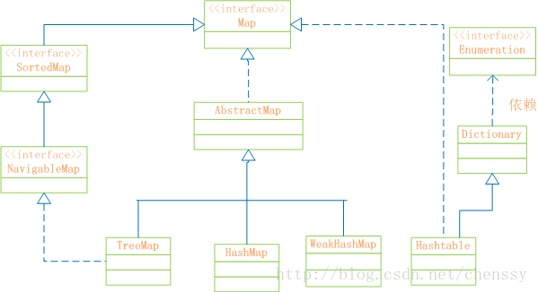
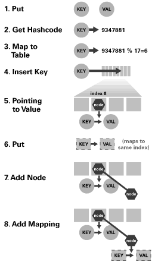
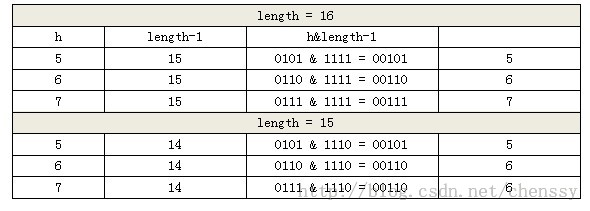

| CSDN博客推荐文章CSDN博客内容聚合服务 |
| Java提高配（三七）—–Java集合细节（三）：subList的缺陷 | ||||||||||||
|
我们经常使用subString方法来对String对象进行分割处理，同时我们也可以使用subList、subMap、subSet来对List、Map、Set进行分割处理，但是这个分割存在某些瑕疵。 一、subList返回仅仅只是一个视图首先我们先看如下实例： public static void main(String[] args) {
List<Integer> list1 = new ArrayList<Integer>();
list1.add(1);
list1.add(2);
//通过构造函数新建一个包含list1的列表 list2
List<Integer> list2 = new ArrayList<Integer>(list1);
//通过subList生成一个与list1一样的列表 list3
List<Integer> list3 = list1.subList(0, list1.size());
//修改list3
list3.add(3);
System.out.println("list1 == list2：" + list1.equals(list2));
System.out.println("list1 == list3：" + list1.equals(list3));
}这个例子非常简单，无非就是通过构造函数、subList重新生成一个与list1一样的list，然后修改list3，最后比较list1 == list2?、list1 == list3?。按照我们常规的思路应该是这样的：因为list3通过add新增了一个元素，那么它肯定与list1不等，而list2是通过list1构造出来的，所以应该相等，所以结果应该是： list1 == list2：true list1 == list3: false 首先我们先不论结果的正确与否，我们先看subList的源码： public List<E> subList(int fromIndex, int toIndex) {
subListRangeCheck(fromIndex, toIndex, size);
return new SubList(this, 0, fromIndex, toIndex);
}subListRangeCheck方式是判断fromIndex、toIndex是否合法，如果合法就直接返回一个subList对象，注意在产生该new该对象的时候传递了一个参数 this ，该参数非常重要，因为他代表着原始list。 /**
* 继承AbstractList类，实现RandomAccess接口
*/
private class SubList extends AbstractList<E> implements RandomAccess {
private final AbstractList<E> parent; //列表
private final int parentOffset;
private final int offset;
int size;
//构造函数
SubList(AbstractList<E> parent,
int offset, int fromIndex, int toIndex) {
this.parent = parent;
this.parentOffset = fromIndex;
this.offset = offset + fromIndex;
this.size = toIndex - fromIndex;
this.modCount = ArrayList.this.modCount;
}
//set方法
public E set(int index, E e) {
rangeCheck(index);
checkForComodification();
E oldValue = ArrayList.this.elementData(offset + index);
ArrayList.this.elementData[offset + index] = e;
return oldValue;
}
//get方法
public E get(int index) {
rangeCheck(index);
checkForComodification();
return ArrayList.this.elementData(offset + index);
}
//add方法
public void add(int index, E e) {
rangeCheckForAdd(index);
checkForComodification();
parent.add(parentOffset + index, e);
this.modCount = parent.modCount;
this.size++;
}
//remove方法
public E remove(int index) {
rangeCheck(index);
checkForComodification();
E result = parent.remove(parentOffset + index);
this.modCount = parent.modCount;
this.size--;
return result;
}
}该SubLsit是ArrayList的内部类，它与ArrayList一样，都是继承AbstractList和实现RandomAccess接口。同时也提供了get、set、add、remove等list常用的方法。但是它的构造函数有点特殊，在该构造函数中有两个地方需要注意： 1、this.parent = parent;而parent就是在前面传递过来的list，也就是说this.parent就是原始list的引用。 2、this.offset = offset + fromIndex;this.parentOffset = fromIndex;。同时在构造函数中它甚至将modCount（fail-fast机制）传递过来了。 我们再看get方法，在get方法中return ArrayList.this.elementData(offset + index);这段代码可以清晰表明get所返回就是原列表offset + index位置的元素。同样的道理还有add方法里面的： parent.add(parentOffset + index, e); this.modCount = parent.modCount; remove方法里面的 E result = parent.remove(parentOffset + index); this.modCount = parent.modCount; 诚然，到了这里我们可以判断subList返回的SubList同样也是AbstractList的子类，同时它的方法如get、set、add、remove等都是在原列表上面做操作，它并没有像subString一样生成一个新的对象。所以subList返回的只是原列表的一个视图，它所有的操作最终都会作用在原列表上。 那么从这里的分析我们可以得出上面的结果应该恰恰与我们上面的答案相反： list1 == list2：false list1 == list3：true
二、subList生成子列表后，不要试图去操作原列表从上面我们知道subList生成的子列表只是原列表的一个视图而已，如果我们操作子列表它产生的作用都会在原列表上面表现，但是如果我们操作原列表会产生什么情况呢？ public static void main(String[] args) {
List<Integer> list1 = new ArrayList<Integer>();
list1.add(1);
list1.add(2);
//通过subList生成一个与list1一样的列表 list3
List<Integer> list3 = list1.subList(0, list1.size());
//修改list3
list1.add(3);
System.out.println("list1'size：" + list1.size());
System.out.println("list3'size：" + list3.size());
}该实例如果不产生意外，那么他们两个list的大小都应该都是3，但是偏偏事与愿违，事实上我们得到的结果是这样的： list1'size：3
Exception in thread "main" java.util.ConcurrentModificationException
at java.util.ArrayList$SubList.checkForComodification(Unknown Source)
at java.util.ArrayList$SubList.size(Unknown Source)
at com.chenssy.test.arrayList.SubListTest.main(SubListTest.java:17)list1正常输出，但是list3就抛出ConcurrentModificationException异常，看过我另一篇博客的同仁肯定对这个异常非常，fail-fast？不错就是fail-fast机制，在fail-fast机制中，LZ花了很多力气来讲述这个异常，所以这里LZ就不对这个异常多讲了（更多请点这里：Java提高篇（三四）—–fail-fast机制）。我们再看size方法： public int size() {
checkForComodification();
return this.size;
}size方法首先会通过checkForComodification验证，然后再返回this.size。 private void checkForComodification() {
if (ArrayList.this.modCount != this.modCount)
throw new ConcurrentModificationException();
}该方法表明当原列表的modCount与this.modCount不相等时就会抛出ConcurrentModificationException。同时我们知道modCount 在new的过程中 “继承”了原列表modCount，只有在修改该列表（子列表）时才会修改该值（先表现在原列表后作用于子列表）。而在该实例中我们是操作原列表，原列表的modCount当然不会反应在子列表的modCount上啦，所以才会抛出该异常。 对于子列表视图，它是动态生成的，生成之后就不要操作原列表了，否则必然都导致视图的不稳定而抛出异常。最好的办法就是将原列表设置为只读状态，要操作就操作子列表： //通过subList生成一个与list1一样的列表 list3
List<Integer> list3 = list1.subList(0, list1.size());
//对list1设置为只读状态
list1 = Collections.unmodifiableList(list1);
三、推荐使用subList处理局部列表在开发过程中我们一定会遇到这样一个问题：获取一堆数据后，需要删除某段数据。例如，有一个列表存在1000条记录，我们需要删除100-200位置处的数据，可能我们会这样处理： for(int i = 0 ; i < list1.size() ; i++){
if(i >= 100 && i <= 200){
list1.remove(i);
/*
* 当然这段代码存在问题，list remove之后后面的元素会填充上来，
* 所以需要对i进行简单的处理，当然这个不是这里讨论的问题。
*/
}
}这个应该是我们大部分人的处理方式吧，其实还有更好的方法，利用subList。在前面LZ已经讲过，子列表的操作都会反映在原列表上。所以下面一行代码全部搞定： list1.subList(100, 200).clear(); 简单而不失华丽！！！！！ 参考资料：编写高质量代码：改善Java程序的151个建议
作者：chenssy 发表于2015/3/6 18:20:06 原文链接
阅读：3040 评论：7 查看评论
| ||||||||||||
| Java提高篇（三六）-----java集合细节（二）：asList的缺陷 | ||||||||||||
|
在实际开发过程中我们经常使用asList讲数组转换为List，这个方法使用起来非常方便，但是asList方法存在几个缺陷： 一、避免使用基本数据类型数组转换为列表使用8个基本类型数组转换为列表时会存在一个比较有味的缺陷。先看如下程序： public static void main(String[] args) {
int[] ints = {1,2,3,4,5};
List list = Arrays.asList(ints);
System.out.println("list'size：" + list.size());
}
------------------------------------
outPut：
list'size：1程序的运行结果并没有像我们预期的那样是5而是逆天的1，这是什么情况？先看源码： public static <T> List<T> asList(T... a) {
return new ArrayList<>(a);
}asList接受的参数是一个泛型的变长参数，我们知道基本数据类型是无法发型化的，也就是说8个基本类型是无法作为asList的参数的， 要想作为泛型参数就必须使用其所对应的包装类型。但是这个这个实例中为什么没有出错呢？因为该实例是将int 类型的数组当做其参数，而在Java中数组是一个对象，它是可以泛型化的。所以该例子是不会产生错误的。既然例子是将整个int 类型的数组当做泛型参数，那么经过asList转换就只有一个int 的列表了。如下： public static void main(String[] args) {
int[] ints = {1,2,3,4,5};
List list = Arrays.asList(ints);
System.out.println("list 的类型:" + list.get(0).getClass());
System.out.println("list.get(0) == ints：" + list.get(0).equals(ints));
}
--------------------------------------------
outPut:
list 的类型:class [I
list.get(0) == ints：true从这个运行结果我们可以充分证明list里面的元素就是int数组。弄清楚这点了，那么修改方法也就一目了然了：将int 改变为Integer。 public static void main(String[] args) {
Integer[] ints = {1,2,3,4,5};
List list = Arrays.asList(ints);
System.out.println("list'size：" + list.size());
System.out.println("list.get(0) 的类型:" + list.get(0).getClass());
System.out.println("list.get(0) == ints[0]：" + list.get(0).equals(ints[0]));
}
----------------------------------------
outPut:
list'size：5
list.get(0) 的类型:class java.lang.Integer
list.get(0) == ints[0]：true>>>>>>Java细节（2.1）：在使用asList时不要将基本数据类型当做参数。 二、asList产生的列表不可操作对于上面的实例我们再做一个小小的修改： public static void main(String[] args) {
Integer[] ints = {1,2,3,4,5};
List list = Arrays.asList(ints);
list.add(6);
}该实例就是讲ints通过asList转换为list 类别，然后再通过add方法加一个元素，这个实例简单的不能再简单了，但是运行结果呢？打出我们所料： Exception in thread "main" java.lang.UnsupportedOperationException
at java.util.AbstractList.add(Unknown Source)
at java.util.AbstractList.add(Unknown Source)
at com.chenssy.test.arrayList.AsListTest.main(AsListTest.java:10)运行结果尽然抛出UnsupportedOperationException异常，该异常表示list不支持add方法。这就让我们郁闷了，list怎么可能不支持add方法呢？难道jdk脑袋堵塞了？我们再看asList的源码： public static <T> List<T> asList(T... a) {
return new ArrayList<>(a);
}asList接受参数后，直接new 一个ArrayList，到这里看应该是没有错误的啊？别急，再往下看: private static class ArrayList<E> extends AbstractList<E>
implements RandomAccess, java.io.Serializable{
private static final long serialVersionUID = -2764017481108945198L;
private final E[] a;
ArrayList(E[] array) {
if (array==null)
throw new NullPointerException();
a = array;
}
//.................
}这是ArrayList的源码,从这里我们可以看出,此ArrayList不是java.util.ArrayList，他是Arrays的内部类。该内部类提供了size、toArray、get、set、indexOf、contains方法，而像add、remove等改变list结果的方法从AbstractList父类继承过来，同时这些方法也比较奇葩，它直接抛出UnsupportedOperationException异常： public boolean add(E e) {
add(size(), e);
return true;
}
public E set(int index, E element) {
throw new UnsupportedOperationException();
}
public void add(int index, E element) {
throw new UnsupportedOperationException();
}
public E remove(int index) {
throw new UnsupportedOperationException();
}通过这些代码可以看出asList返回的列表只不过是一个披着list的外衣，它并没有list的基本特性（变长）。该list是一个长度不可变的列表，传入参数的数组有多长，其返回的列表就只能是多长。所以： >>>>>>Java细节（2.2）：不要试图改变asList返回的列表，否则你会自食苦果。
作者：chenssy 发表于2014/8/4 19:24:29 原文链接
阅读：2775 评论：0 查看评论
| ||||||||||||
| Java提高篇（三五）-----Java集合细节（一）：请为集合指定初始容量 | ||||||||||||
|
集合是我们在Java编程中使用非常广泛的，它就像大海，海纳百川，像万能容器，盛装万物，而且这个大海，万能容器还可以无限变大（如果条件允许）。当这个海、容器的量变得非常大的时候，它的初始容量就会显得很重要了，因为挖海、扩容是需要消耗大量的人力物力财力的。同样的道理，Collection的初始容量也显得异常重要。所以：对于已知的情景，请为集合指定初始容量。 public static void main(String[] args) {
StudentVO student = null;
long begin1 = System.currentTimeMillis();
List<StudentVO> list1 = new ArrayList<>();
for(int i = 0 ; i < 1000000; i++){
student = new StudentVO(i,"chenssy_"+i,i);
list1.add(student);
}
long end1 = System.currentTimeMillis();
System.out.println("list1 time：" + (end1 - begin1));
long begin2 = System.currentTimeMillis();
List<StudentVO> list2 = new ArrayList<>(1000000);
for(int i = 0 ; i < 1000000; i++){
student = new StudentVO(i,"chenssy_"+i,i);
list2.add(student);
}
long end2 = System.currentTimeMillis();
System.out.println("list2 time：" + (end2 - begin2));
}上面代码两个list都是插入1000000条数据，只不过list1没有没有申请初始化容量，而list2初始化容量1000000。那运行结果如下： list1 time：1638 list2 time：921 从上面的运行结果我们可以看出list2的速度是list1的两倍左右。在前面LZ就提过，ArrayList的扩容机制是比较消耗资源的。我们先看ArrayList的add方法： public boolean add(E e) {
ensureCapacity(size + 1);
elementData[size++] = e;
return true;
}
public void ensureCapacity(int minCapacity) {
modCount++; //修改计数器
int oldCapacity = elementData.length;
//当前需要的长度超过了数组长度，进行扩容处理
if (minCapacity > oldCapacity) {
Object oldData[] = elementData;
//新的容量 = 旧容量 * 1.5 + 1
int newCapacity = (oldCapacity * 3)/2 + 1;
if (newCapacity < minCapacity)
newCapacity = minCapacity;
//数组拷贝，生成新的数组
elementData = Arrays.copyOf(elementData, newCapacity);
}
}ArrayList每次新增一个元素，就会检测ArrayList的当前容量是否已经到达临界点，如果到达临界点则会扩容1.5倍。然而ArrayList的扩容以及数组的拷贝生成新的数组是相当耗资源的。所以若我们事先已知集合的使用场景，知道集合的大概范围，我们最好是指定初始化容量，这样对资源的利用会更加好，尤其是大数据量的前提下，效率的提升和资源的利用会显得更加具有优势。 >>>>>>java集合细节一：请为集合指定初始容量 -----原文出自:http://cmsblogs.com/?p=1233,请尊重作者辛勤劳动成果,转载说明出处. -----个人站点:http://cmsblogs.com
作者：chenssy 发表于2014/8/4 19:19:20 原文链接
阅读：4372 评论：0 查看评论
| ||||||||||||
| Java提高篇（三四）-----fail-fast机制 | ||||||||||||
|
在JDK的Collection中我们时常会看到类似于这样的话： 例如，ArrayList:
HashMap中：
在这两段话中反复地提到”快速失败”。那么何为”快速失败”机制呢？ “快速失败”也就是fail-fast，它是Java集合的一种错误检测机制。当多个线程对集合进行结构上的改变的操作时，有可能会产生fail-fast机制。记住是有可能，而不是一定。例如：假设存在两个线程（线程1、线程2），线程1通过Iterator在遍历集合A中的元素，在某个时候线程2修改了集合A的结构（是结构上面的修改，而不是简单的修改集合元素的内容），那么这个时候程序就会抛出 ConcurrentModificationException 异常，从而产生fail-fast机制。 一、fail-fast示例public class FailFastTest {
private static List<Integer> list = new ArrayList<>();
/**
* @desc:线程one迭代list
* @Project:test
* @file:FailFastTest.java
* @Authro:chenssy
* @data:2014年7月26日
*/
private static class threadOne extends Thread{
public void run() {
Iterator<Integer> iterator = list.iterator();
while(iterator.hasNext()){
int i = iterator.next();
System.out.println("ThreadOne 遍历:" + i);
try {
Thread.sleep(10);
} catch (InterruptedException e) {
e.printStackTrace();
}
}
}
}
/**
* @desc:当i == 3时，修改list
* @Project:test
* @file:FailFastTest.java
* @Authro:chenssy
* @data:2014年7月26日
*/
private static class threadTwo extends Thread{
public void run(){
int i = 0 ;
while(i < 6){
System.out.println("ThreadTwo run：" + i);
if(i == 3){
list.remove(i);
}
i++;
}
}
}
public static void main(String[] args) {
for(int i = 0 ; i < 10;i++){
list.add(i);
}
new threadOne().start();
new threadTwo().start();
}
} 运行结果： ThreadOne 遍历:0
ThreadTwo run：0
ThreadTwo run：1
ThreadTwo run：2
ThreadTwo run：3
ThreadTwo run：4
ThreadTwo run：5
Exception in thread "Thread-0" java.util.ConcurrentModificationException
at java.util.ArrayList$Itr.checkForComodification(Unknown Source)
at java.util.ArrayList$Itr.next(Unknown Source)
at test.ArrayListTest$threadOne.run(ArrayListTest.java:23)二、fail-fast产生原因通过上面的示例和讲解，我初步知道fail-fast产生的原因就在于程序在对 collection 进行迭代时，某个线程对该 collection 在结构上对其做了修改，这时迭代器就会抛出 ConcurrentModificationException 异常信息，从而产生 fail-fast。 要了解fail-fast机制，我们首先要对ConcurrentModificationException 异常有所了解。当方法检测到对象的并发修改，但不允许这种修改时就抛出该异常。同时需要注意的是，该异常不会始终指出对象已经由不同线程并发修改，如果单线程违反了规则，同样也有可能会抛出改异常。 诚然，迭代器的快速失败行为无法得到保证，它不能保证一定会出现该错误，但是快速失败操作会尽最大努力抛出ConcurrentModificationException异常，所以因此，为提高此类操作的正确性而编写一个依赖于此异常的程序是错误的做法，正确做法是：ConcurrentModificationException 应该仅用于检测 bug。下面我将以ArrayList为例进一步分析fail-fast产生的原因。 从前面我们知道fail-fast是在操作迭代器时产生的。现在我们来看看ArrayList中迭代器的源代码： private class Itr implements Iterator<E> {
int cursor;
int lastRet = -1;
int expectedModCount = ArrayList.this.modCount;
public boolean hasNext() {
return (this.cursor != ArrayList.this.size);
}
public E next() {
checkForComodification();
/** 省略此处代码 */
}
public void remove() {
if (this.lastRet < 0)
throw new IllegalStateException();
checkForComodification();
/** 省略此处代码 */
}
final void checkForComodification() {
if (ArrayList.this.modCount == this.expectedModCount)
return;
throw new ConcurrentModificationException();
}
}从上面的源代码我们可以看出，迭代器在调用next()、remove()方法时都是调用checkForComodification()方法，该方法主要就是检测modCount == expectedModCount ? 若不等则抛出ConcurrentModificationException 异常，从而产生fail-fast机制。所以要弄清楚为什么会产生fail-fast机制我们就必须要用弄明白为什么modCount != expectedModCount ，他们的值在什么时候发生改变的。 expectedModCount 是在Itr中定义的：int expectedModCount = ArrayList.this.modCount;所以他的值是不可能会修改的，所以会变的就是modCount。modCount是在 AbstractList 中定义的，为全局变量： protected transient int modCount = 0; 那么他什么时候因为什么原因而发生改变呢？请看ArrayList的源码： public boolean add(E paramE) {
ensureCapacityInternal(this.size + 1);
/** 省略此处代码 */
}
private void ensureCapacityInternal(int paramInt) {
if (this.elementData == EMPTY_ELEMENTDATA)
paramInt = Math.max(10, paramInt);
ensureExplicitCapacity(paramInt);
}
private void ensureExplicitCapacity(int paramInt) {
this.modCount += 1; //修改modCount
/** 省略此处代码 */
}
public boolean remove(Object paramObject) {
int i;
if (paramObject == null)
for (i = 0; i < this.size; ++i) {
if (this.elementData[i] != null)
continue;
fastRemove(i);
return true;
}
else
for (i = 0; i < this.size; ++i) {
if (!(paramObject.equals(this.elementData[i])))
continue;
fastRemove(i);
return true;
}
return false;
}
private void fastRemove(int paramInt) {
this.modCount += 1; //修改modCount
/** 省略此处代码 */
}
public void clear() {
this.modCount += 1; //修改modCount
/** 省略此处代码 */
}从上面的源代码我们可以看出，ArrayList中无论add、remove、clear方法只要是涉及了改变ArrayList元素的个数的方法都会导致modCount的改变。所以我们这里可以初步判断由于expectedModCount 得值与modCount的改变不同步，导致两者之间不等从而产生fail-fast机制。知道产生fail-fast产生的根本原因了，我们可以有如下场景： 有两个线程（线程A，线程B），其中线程A负责遍历list、线程B修改list。线程A在遍历list过程的某个时候（此时expectedModCount = modCount=N），线程启动，同时线程B增加一个元素，这是modCount的值发生改变（modCount + 1 = N + 1）。线程A继续遍历执行next方法时，通告checkForComodification方法发现expectedModCount = N ，而modCount = N + 1，两者不等，这时就抛出ConcurrentModificationException 异常，从而产生fail-fast机制。 所以，直到这里我们已经完全了解了fail-fast产生的根本原因了。知道了原因就好找解决办法了。 三、fail-fast解决办法通过前面的实例、源码分析，我想各位已经基本了解了fail-fast的机制，下面我就产生的原因提出解决方案。这里有两种解决方案： 方案一：在遍历过程中所有涉及到改变modCount值得地方全部加上synchronized或者直接使用Collections.synchronizedList，这样就可以解决。但是不推荐，因为增删造成的同步锁可能会阻塞遍历操作。 方案二：使用CopyOnWriteArrayList来替换ArrayList。推荐使用该方案。 CopyOnWriteArrayList为何物？ArrayList 的一个线程安全的变体，其中所有可变操作（add、set 等等）都是通过对底层数组进行一次新的复制来实现的。 该类产生的开销比较大，但是在两种情况下，它非常适合使用。1：在不能或不想进行同步遍历，但又需要从并发线程中排除冲突时。2：当遍历操作的数量大大超过可变操作的数量时。遇到这两种情况使用CopyOnWriteArrayList来替代ArrayList再适合不过了。那么为什么CopyOnWriterArrayList可以替代ArrayList呢？ 第一、CopyOnWriterArrayList的无论是从数据结构、定义都和ArrayList一样。它和ArrayList一样，同样是实现List接口，底层使用数组实现。在方法上也包含add、remove、clear、iterator等方法。 第二、CopyOnWriterArrayList根本就不会产生ConcurrentModificationException异常，也就是它使用迭代器完全不会产生fail-fast机制。请看： private static class COWIterator<E> implements ListIterator<E> {
/** 省略此处代码 */
public E next() {
if (!(hasNext()))
throw new NoSuchElementException();
return this.snapshot[(this.cursor++)];
}
/** 省略此处代码 */
}CopyOnWriterArrayList的方法根本就没有像ArrayList中使用checkForComodification方法来判断expectedModCount 与 modCount 是否相等。它为什么会这么做，凭什么可以这么做呢？我们以add方法为例： public boolean add(E paramE) {
ReentrantLock localReentrantLock = this.lock;
localReentrantLock.lock();
try {
Object[] arrayOfObject1 = getArray();
int i = arrayOfObject1.length;
Object[] arrayOfObject2 = Arrays.copyOf(arrayOfObject1, i + 1);
arrayOfObject2[i] = paramE;
setArray(arrayOfObject2);
int j = 1;
return j;
} finally {
localReentrantLock.unlock();
}
}
final void setArray(Object[] paramArrayOfObject) {
this.array = paramArrayOfObject;
}CopyOnWriterArrayList的add方法与ArrayList的add方法有一个最大的不同点就在于，下面三句代码： Object[] arrayOfObject2 = Arrays.copyOf(arrayOfObject1, i + 1); arrayOfObject2[i] = paramE; setArray(arrayOfObject2); 就是这三句代码使得CopyOnWriterArrayList不会抛ConcurrentModificationException异常。他们所展现的魅力就在于copy原来的array，再在copy数组上进行add操作，这样做就完全不会影响COWIterator中的array了。 所以CopyOnWriterArrayList所代表的核心概念就是：任何对array在结构上有所改变的操作（add、remove、clear等），CopyOnWriterArrayList都会copy现有的数据，再在copy的数据上修改，这样就不会影响COWIterator中的数据了，修改完成之后改变原有数据的引用即可。同时这样造成的代价就是产生大量的对象，同时数组的copy也是相当有损耗的。 参考文档：http://www.cnblogs.com/skywang12345/p/3308762.html#a3
-----原文出自:http://cmsblogs.com/?p=1220,请尊重作者辛勤劳动成果,转载说明出处. -----个人站点:http://cmsblogs.com
作者：chenssy 发表于2014/7/26 22:40:44 原文链接
阅读：10927 评论：23 查看评论
| ||||||||||||
| Java提高篇（三三）-----Map总结 | ||||||||||||
|
在前面LZ详细介绍了HashMap、HashTable、TreeMap的实现方法，从数据结构、实现原理、源码分析三个方面进行阐述，对这个三个类应该有了比较清晰的了解,下面LZ就Map做一个简单的总结。 推荐阅读： 一、Map概述首先先看Map的结构示意图  Map：“键值”对映射的抽象接口。该映射不包括重复的键，一个键对应一个值。 SortedMap：有序的键值对接口，继承Map接口。 NavigableMap：继承SortedMap，具有了针对给定搜索目标返回最接近匹配项的导航方法的接口。 AbstractMap：实现了Map中的绝大部分函数接口。它减少了“Map的实现类”的重复编码。 Dictionary：任何可将键映射到相应值的类的抽象父类。目前被Map接口取代。 TreeMap：有序散列表，实现SortedMap 接口，底层通过红黑树实现。 HashMap：是基于“拉链法”实现的散列表。底层采用“数组+链表”实现。 WeakHashMap：基于“拉链法”实现的散列表。 HashTable：基于“拉链法”实现的散列表。 总结如下：
他们之间的区别：
二、内部哈希： 哈希映射技术几乎所有通用Map都使用哈希映射技术。对于我们程序员来说我们必须要对其有所了解。 哈希映射技术是一种就元素映射到数组的非常简单的技术。由于哈希映射采用的是数组结果，那么必然存在一中用于确定任意键访问数组的索引机制，该机制能够提供一个小于数组大小的整数，我们将该机制称之为哈希函数。在Java中我们不必为寻找这样的整数而大伤脑筋，因为每个对象都必定存在一个返回整数值的hashCode方法，而我们需要做的就是将其转换为整数，然后再将该值除以数组大小取余即可。如下： int hashValue = Maths.abs(obj.hashCode()) % size;下面是HashMap、HashTable的： ----------HashMap------------
//计算hash值
static int hash(int h) {
h ^= (h >>> 20) ^ (h >>> 12);
return h ^ (h >>> 7) ^ (h >>> 4);
}
//计算key的索引位置
static int indexFor(int h, int length) {
return h & (length-1);
}
-----HashTable--------------
int index = (hash & 0x7FFFFFFF) % tab.length; //确认该key的索引位置位置的索引就代表了该节点在数组中的位置。下图是哈希映射的基本原理图：  public V put(K key, V value) {
//当key为null，调用putForNullKey方法，保存null与table第一个位置中，这是HashMap允许为null的原因
if (key == null)
return putForNullKey(value);
//计算key的hash值
int hash = hash(key.hashCode());
//计算key hash 值在 table 数组中的位置
int i = indexFor(hash, table.length);
//从i出开始迭代 e,判断是否存在相同的key
for (Entry<K, V> e = table[i]; e != null; e = e.next) {
Object k;
//判断该条链上是否有hash值相同的(key相同)
//若存在相同，则直接覆盖value，返回旧value
if (e.hash == hash && ((k = e.key) == key || key.equals(k))) {
V oldValue = e.value; //旧值 = 新值
e.value = value;
e.recordAccess(this);
return oldValue; //返回旧值
}
}
//修改次数增加1
modCount++;
//将key、value添加至i位置处
addEntry(hash, key, value, i);
return null;
}
HashMap的put方法展示了哈希映射的基本思想，其实如果我们查看其它的Map，发现其原理都差不多！ 三、Map优化首先我们这样假设，假设哈希映射的内部数组的大小只有1，所有的元素都将映射该位置（0），从而构成一条较长的链表。由于我们更新、访问都要对这条链表进行线性搜索，这样势必会降低效率。我们假设，如果存在一个非常大数组，每个位置链表处都只有一个元素，在进行访问时计算其 index 值就会获得该对象，这样做虽然会提高我们搜索的效率，但是它浪费了控件。诚然，虽然这两种方式都是极端的，但是它给我们提供了一种优化思路：使用一个较大的数组让元素能够均匀分布。在Map有两个会影响到其效率，一是容器的初始化大小、二是负载因子。 3.1、调整实现大小在哈希映射表中，内部数组中的每个位置称作“存储桶”(bucket)，而可用的存储桶数（即内部数组的大小）称作容量 (capacity)，我们为了使Map对象能够有效地处理任意数的元素，将Map设计成可以调整自身的大小。我们知道当Map中的元素达到一定量的时候就会调整容器自身的大小，但是这个调整大小的过程其开销是非常大的。调整大小需要将原来所有的元素插入到新数组中。我们知道index = hash(key) % length。这样可能会导致原先冲突的键不在冲突，不冲突的键现在冲突的，重新计算、调整、插入的过程开销是非常大的，效率也比较低下。所以，如果我们开始知道Map的预期大小值，将Map调整的足够大，则可以大大减少甚至不需要重新调整大小，这很有可能会提高速度。下面是HashMap调整容器大小的过程，通过下面的代码我们可以看到其扩容过程的复杂性： void resize(int newCapacity) {
Entry[] oldTable = table; //原始容器
int oldCapacity = oldTable.length; //原始容器大小
if (oldCapacity == MAXIMUM_CAPACITY) { //是否超过最大值：1073741824
threshold = Integer.MAX_VALUE;
return;
}
//新的数组：大小为 oldCapacity * 2
Entry[] newTable = new Entry[newCapacity];
transfer(newTable, initHashSeedAsNeeded(newCapacity));
table = newTable;
/*
* 重新计算阀值 = newCapacity * loadFactor > MAXIMUM_CAPACITY + 1 ?
* newCapacity * loadFactor :MAXIMUM_CAPACITY + 1
*/
threshold = (int)Math.min(newCapacity * loadFactor, MAXIMUM_CAPACITY + 1);
}
//将元素插入到新数组中
void transfer(Entry[] newTable, boolean rehash) {
int newCapacity = newTable.length;
for (Entry<K,V> e : table) {
while(null != e) {
Entry<K,V> next = e.next;
if (rehash) {
e.hash = null == e.key ? 0 : hash(e.key);
}
int i = indexFor(e.hash, newCapacity);
e.next = newTable[i];
newTable[i] = e;
e = next;
}
}
}3.2、负载因子为了确认何时需要调整Map容器，Map使用了一个额外的参数并且粗略计算存储容器的密度。在Map调整大小之前，使用”负载因子”来指示Map将会承担的“负载量”，也就是它的负载程度，当容器中元素的数量达到了这个“负载量”，则Map将会进行扩容操作。负载因子、容量、Map大小之间的关系如下：负载因子 * 容量 > map大小 ----->调整Map大小。 例如：如果负载因子大小为0.75（HashMap的默认值），默认容量为11，则 11 * 0.75 = 8.25 = 8，所以当我们容器中插入第八个元素的时候，Map就会调整大小。 负载因子本身就是在控件和时间之间的折衷。当我使用较小的负载因子时，虽然降低了冲突的可能性，使得单个链表的长度减小了，加快了访问和更新的速度，但是它占用了更多的控件，使得数组中的大部分控件没有得到利用，元素分布比较稀疏，同时由于Map频繁的调整大小，可能会降低性能。但是如果负载因子过大，会使得元素分布比较紧凑，导致产生冲突的可能性加大，从而访问、更新速度较慢。所以我们一般推荐不更改负载因子的值，采用默认值0.75. 最后推荐阅读： java提高篇（二三）—–HashMap
-----原文出自:http://cmsblogs.com/?p=1212,请尊重作者辛勤劳动成果,转载说明出处. -----个人站点:http://cmsblogs.com
作者：chenssy 发表于2014/7/17 16:39:46 原文链接
阅读：4748 评论：3 查看评论
| ||||||||||||
| Java提高篇（三二）-----List总结 | ||||||||||||
|
前面LZ已经充分介绍了有关于List接口的大部分知识，如ArrayList、LinkedList、Vector、Stack，通过这几个知识点可以对List接口有了比较深的了解了。只有通过归纳总结的知识才是你的知识。所以下面LZ就List接口做一个总结。推荐阅读： java提高篇（二一）-----ArrayList一、List接口概述 List接口，成为有序的Collection也就是序列。该接口可以对列表中的每一个元素的插入位置进行精确的控制，同时用户可以根据元素的整数索引（在列表中的位置）访问元素，并搜索列表中的元素。 下图是List接口的框架图：
通过上面的框架图，可以对List的结构了然于心，其各个类、接口如下： Collection：Collection 层次结构 中的根接口。它表示一组对象，这些对象也称为 collection 的元素。对于Collection而言，它不提供任何直接的实现，所有的实现全部由它的子类负责。 AbstractCollection：提供 Collection 接口的骨干实现，以最大限度地减少了实现此接口所需的工作。对于我们而言要实现一个不可修改的 collection，只需扩展此类，并提供 iterator 和 size 方法的实现。但要实现可修改的 collection，就必须另外重写此类的 add 方法（否则，会抛出 UnsupportedOperationException），iterator 方法返回的迭代器还必须另外实现其 remove 方法。 terator：迭代器。 ListIterator：系列表迭代器，允许程序员按任一方向遍历列表、迭代期间修改列表，并获得迭代器在列表中的当前位置。 List：继承于Collection的接口。它代表着有序的队列。 AbstractList：List 接口的骨干实现，以最大限度地减少实现“随机访问”数据存储（如数组）支持的该接口所需的工作。 Queue：队列。提供队列基本的插入、获取、检查操作。 Deque：一个线性 collection，支持在两端插入和移除元素。大多数 Deque 实现对于它们能够包含的元素数没有固定限制，但此接口既支持有容量限制的双端队列，也支持没有固定大小限制的双端队列。 AbstractSequentialList：提供了 List 接口的骨干实现，从而最大限度地减少了实现受“连续访问”数据存储（如链接列表）支持的此接口所需的工作。从某种意义上说，此类与在列表的列表迭代器上实现“随机访问”方法。 LinkedList：List 接口的链接列表实现。它实现所有可选的列表操作。 ArrayList：List 接口的大小可变数组的实现。它实现了所有可选列表操作，并允许包括 null 在内的所有元素。除了实现 List 接口外，此类还提供一些方法来操作内部用来存储列表的数组的大小。 Vector：实现可增长的对象数组。与数组一样，它包含可以使用整数索引进行访问的组件。 Stack：后进先出（LIFO）的对象堆栈。它通过五个操作对类 Vector 进行了扩展 ，允许将向量视为堆栈。 Enumeration：枚举，实现了该接口的对象，它生成一系列元素，一次生成一个。连续调用 nextElement 方法将返回一系列的连续元素。
二、使用场景学习知识的根本目的就是使用它。每个知识点都有它的使用范围。集合也是如此，在Java中集合的家族非常庞大，每个成员都有最适合的使用场景。在刚刚接触List时，LZ就说过如果涉及到“栈”、“队列”、“链表”等操作，请优先考虑用List。至于是那个List则分如下： 1、对于需要快速插入、删除元素，则需使用LinkedList。 2、对于需要快速访问元素，则需使用ArrayList。 3、对于“单线程环境”或者“多线程环境，但是List仅被一个线程操作”，需要考虑使用非同步的类，如果是“多线程环境，切List可能同时被多个线程操作”，考虑使用同步的类（如Vector）。 2.1ArrayList、LinkedList性能分析在List中我们使用最普遍的就是LinkedList和ArrayList，同时我们也了解了他们两者之间的使用场景和区别。 public class ListTest {
private static final int COUNT = 100000;
private static ArrayList arrayList = new ArrayList<>();
private static LinkedList linkedList = new LinkedList<>();
private static Vector vector = new Vector<>();
public static void insertToList(List list){
long startTime = System.currentTimeMillis();
for(int i = 0 ; i < COUNT ; i++){
list.add(0,i);
}
long endTime = System.currentTimeMillis();
System.out.println("插入 " + COUNT + "元素" + getName(list) + "花费 " + (endTime - startTime) + " 毫秒");
}
public static void deleteFromList(List list){
long startTime = System.currentTimeMillis();
for(int i = 0 ; i < COUNT ; i++){
list.remove(0);
}
long endTime = System.currentTimeMillis();
System.out.println("删除" + COUNT + "元素" + getName(list) + "花费 " + (endTime - startTime) + " 毫秒");
}
public static void readList(List list){
long startTime = System.currentTimeMillis();
for(int i = 0 ; i < COUNT ; i++){
list.get(i);
}
long endTime = System.currentTimeMillis();
System.out.println("读取" + COUNT + "元素" + getName(list) + "花费 " + (endTime - startTime) + " 毫秒");
}
private static String getName(List list) {
String name = "";
if(list instanceof ArrayList){
name = "ArrayList";
}
else if(list instanceof LinkedList){
name = "LinkedList";
}
else if(list instanceof Vector){
name = "Vector";
}
return name;
}
public static void main(String[] args) {
insertToList(arrayList);
insertToList(linkedList);
insertToList(vector);
System.out.println("--------------------------------------");
readList(arrayList);
readList(linkedList);
readList(vector);
System.out.println("--------------------------------------");
deleteFromList(arrayList);
deleteFromList(linkedList);
deleteFromList(vector);
}
}运行结果: 插入 100000元素ArrayList花费 3900 毫秒 插入 100000元素LinkedList花费 15 毫秒 插入 100000元素Vector花费 3933 毫秒 -------------------------------------- 读取100000元素ArrayList花费 0 毫秒 读取100000元素LinkedList花费 8877 毫秒 读取100000元素Vector花费 16 毫秒 -------------------------------------- 删除100000元素ArrayList花费 4618 毫秒 删除100000元素LinkedList花费 16 毫秒 删除100000元素Vector花费 4759 毫秒 从上面的运行结果我们可以清晰的看出ArrayList、LinkedList、Vector增加、删除、遍历的效率问题。下面我就插入方法add(int index, E element),delete、get方法各位如有兴趣可以研究研究。 首先我们先看三者之间的源码： ArrayList public void add(int index, E element) {
rangeCheckForAdd(index); //检查是否index是否合法
ensureCapacityInternal(size + 1); //扩容操作
System.arraycopy(elementData, index, elementData, index + 1, size - index); //数组拷贝
elementData[index] = element; //插入
size++;
}rangeCheckForAdd、ensureCapacityInternal两个方法没有什么影响，真正产生影响的是System.arraycopy方法，该方法是个JNI函数，是在JVM中实现的。声明如下： public static native void arraycopy(Object src, int srcPos, Object dest, int destPos, int length); 目前LZ无法看到源码，具体的实现不是很清楚，不过System.arraycopy源码分析对其进行了比较清晰的分析。但事实上我们只需要了解该方法会移动index后面的所有元素即可，这就意味着ArrayList的add(int index, E element)方法会引起index位置之后所有元素的改变，这真是牵一处而动全身。 LinkedList public void add(int index, E element) {
checkPositionIndex(index);
if (index == size) //插入位置在末尾
linkLast(element);
else
linkBefore(element, node(index));
}该方法比较简单，插入位置在末尾则调用linkLast方法，否则调用linkBefore方法，其实linkLast、linkBefore都是非常简单的实现，就是在index位置插入元素，至于index具体为知则有node方法来解决，同时node对index位置检索还有一个加速作用，如下： Node<E> node(int index) {
if (index < (size >> 1)) { //如果index 小于 size/2 则从头开始查找
Node<E> x = first;
for (int i = 0; i < index; i++)
x = x.next;
return x;
} else { //如果index 大于 size/2 则从尾部开始查找
Node<E> x = last;
for (int i = size - 1; i > index; i--)
x = x.prev;
return x;
}
}所以linkedList的插入动作比ArrayList动作快就在于两个方面。1：linkedList不需要执行元素拷贝动作，没有牵一发而动全身的大动作。2:查找插入位置有加速动作即：若index < 双向链表长度的1/2，则从前向后查找; 否则，从后向前查找。 Vector Vector的实现机制和ArrayList一样，同样是使用动态数组来实现的，所以他们两者之间的效率差不多，add的源码也一样，如下： public void add(int index, E element) {
insertElementAt(element, index);
}
public synchronized void insertElementAt(E obj, int index) {
modCount++;
if (index > elementCount) {
throw new ArrayIndexOutOfBoundsException(index
+ " > " + elementCount);
}
ensureCapacityHelper(elementCount + 1);
System.arraycopy(elementData, index, elementData, index + 1, elementCount - index);
elementData[index] = obj;
elementCount++;
}上面是针对ArrayList、LinkedList、Vector三者之间的add（int index,E element)方法的解释，解释了LinkedList的插入动作要比ArrayList、Vector的插入动作效率为什么要高出这么多！至于delete、get两个方法LZ就不多解释了。 同时LZ在写上面那个例子时发现了一个非常有趣的现象，就是linkedList在某些时候执行add方法时比ArrayList方法会更慢！至于在什么情况？为什么会慢LZ下篇博客解释，当然不知道这个情况各位是否也遇到过？？ 2.2、Vector和ArrayList的区别
四、更多-----原文出自:http://cmsblogs.com/?p=1201,请尊重作者辛勤劳动成果,转载说明出处. -----个人站点:http://cmsblogs.com
作者：chenssy 发表于2014/7/14 10:18:13 原文链接
阅读：2913 评论：3 查看评论
| ||||||||||||
| Java提高篇（三一）-----Stack | ||||||||||||
|
在Java中Stack类表示后进先出（LIFO）的对象堆栈。栈是一种非常常见的数据结构，它采用典型的先进后出的操作方式完成的。每一个栈都包含一个栈顶，每次出栈是将栈顶的数据取出，如下：
Stack通过五个操作对Vector进行扩展，允许将向量视为堆栈。这个五个操作如下：
Stack继承Vector，他对Vector进行了简单的扩展： public class Stack<E> extends Vector<E> Stack的实现非常简单，仅有一个构造方法，五个实现方法（从Vector继承而来的方法不算与其中），同时其实现的源码非常简单 /**
* 构造函数
*/
public Stack() {
}
/**
* push函数：将元素存入栈顶
*/
public E push(E item) {
// 将元素存入栈顶。
// addElement()的实现在Vector.java中
addElement(item);
return item;
}
/**
* pop函数：返回栈顶元素，并将其从栈中删除
*/
public synchronized E pop() {
E obj;
int len = size();
obj = peek();
// 删除栈顶元素，removeElementAt()的实现在Vector.java中
removeElementAt(len - 1);
return obj;
}
/**
* peek函数：返回栈顶元素，不执行删除操作
*/
public synchronized E peek() {
int len = size();
if (len == 0)
throw new EmptyStackException();
// 返回栈顶元素，elementAt()具体实现在Vector.java中
return elementAt(len - 1);
}
/**
* 栈是否为空
*/
public boolean empty() {
return size() == 0;
}
/**
* 查找“元素o”在栈中的位置：由栈底向栈顶方向数
*/
public synchronized int search(Object o) {
// 获取元素索引，elementAt()具体实现在Vector.java中
int i = lastIndexOf(o);
if (i >= 0) {
return size() - i;
}
return -1;
}Stack的源码很多都是基于Vector，所以这里不再累述，更多详情请参考：Java提高篇（二九）-----Vector
作者：chenssy 发表于2014/7/14 10:11:21 原文链接
阅读：3574 评论：1 查看评论
| ||||||||||||
| java提高篇（三十）-----Iterator | ||||||||||||
|
迭代对于我们搞Java的来说绝对不陌生。我们常常使用JDK提供的迭代接口进行Java集合的迭代。 Iterator iterator = list.iterator();
while(iterator.hasNext()){
String string = iterator.next();
//do something
}迭代其实我们可以简单地理解为遍历，是一个标准化遍历各类容器里面的所有对象的方法类，它是一个很典型的设计模式。Iterator模式是用于遍历集合类的标准访问方法。它可以把访问逻辑从不同类型的集合类中抽象出来，从而避免向客户端暴露集合的内部结构。 在没有迭代器时我们都是这么进行处理的。如下： 对于数组我们是使用下标来进行处理的: int[] arrays = new int[10];
for(int i = 0 ; i < arrays.length ; i++){
int a = arrays[i];
//do something
}对于ArrayList是这么处理的: List<String> list = new ArrayList<String>();
for(int i = 0 ; i < list.size() ; i++){
String string = list.get(i);
//do something
}对于这两种方式，我们总是都事先知道集合的内部结构，访问代码和集合本身是紧密耦合的，无法将访问逻辑从集合类和客户端代码中分离出来。同时每一种集合对应一种遍历方法，客户端代码无法复用。 在实际应用中如何需要将上面将两个集合进行整合是相当麻烦的。所以为了解决以上问题，Iterator模式腾空出世，它总是用同一种逻辑来遍历集合。使得客户端自身不需要来维护集合的内部结构，所有的内部状态都由Iterator来维护。客户端从不直接和集合类打交道，它总是控制Iterator，向它发送"向前"，"向后"，"取当前元素"的命令，就可以间接遍历整个集合。 上面只是对Iterator模式进行简单的说明，下面我们看看Java中Iterator接口，看他是如何来进行实现的。 一、java.util.Iterator在Java中Iterator为一个接口，它只提供了迭代了基本规则，在JDK中他是这样定义的：对 collection 进行迭代的迭代器。迭代器取代了 Java Collections Framework 中的 Enumeration。迭代器与枚举有两点不同： 1、迭代器允许调用者利用定义良好的语义在迭代期间从迭代器所指向的 collection 移除元素。 2、方法名称得到了改进。 其接口定义如下： public interface Iterator {
boolean hasNext();
Object next();
void remove();
}其中： Object next()：返回迭代器刚越过的元素的引用，返回值是Object，需要强制转换成自己需要的类型 boolean hasNext()：判断容器内是否还有可供访问的元素 void remove()：删除迭代器刚越过的元素 对于我们而言，我们只一般只需使用next()、hasNext()两个方法即可完成迭代。如下： for(Iterator it = c.iterator(); it.hasNext(); ) {
Object o = it.next();
//do something
}前面阐述了Iterator有一个很大的优点,就是我们不必知道集合的内部结果,集合的内部结构、状态由Iterator来维持，通过统一的方法hasNext()、next()来判断、获取下一个元素，至于具体的内部实现我们就不用关心了。但是作为一个合格的程序员我们非常有必要来弄清楚Iterator的实现。下面就ArrayList的源码进行分析分析。 二、各个集合的Iterator的实现下面就ArrayList的Iterator实现来分析，其实如果我们理解了ArrayList、Hashset、TreeSet的数据结构，内部实现，对于他们是如何实现Iterator也会胸有成竹的。因为ArrayList的内部实现采用数组，所以我们只需要记录相应位置的索引即可，其方法的实现比较简单。 2.1、ArrayList的Iterator实现在ArrayList内部首先是定义一个内部类Itr，该内部类实现Iterator接口，如下： private class Itr implements Iterator<E> {
//do something
}而ArrayList的iterator()方法实现： public Iterator<E> iterator() {
return new Itr();
}所以通过使用ArrayList.iterator()方法返回的是Itr()内部类，所以现在我们需要关心的就是Itr()内部类的实现： 在Itr内部定义了三个int型的变量：cursor、lastRet、expectedModCount。其中cursor表示下一个元素的索引位置，lastRet表示上一个元素的索引位置 int cursor; int lastRet = -1; int expectedModCount = modCount; 从cursor、lastRet定义可以看出，lastRet一直比cursor少一所以hasNext()实现方法异常简单，只需要判断cursor和lastRet是否相等即可。 public boolean hasNext() {
return cursor != size;
}对于next()实现其实也是比较简单的，只要返回cursor索引位置处的元素即可，然后修改cursor、lastRet即可， public E next() {
checkForComodification();
int i = cursor; //记录索引位置
if (i >= size) //如果获取元素大于集合元素个数，则抛出异常
throw new NoSuchElementException();
Object[] elementData = ArrayList.this.elementData;
if (i >= elementData.length)
throw new ConcurrentModificationException();
cursor = i + 1; //cursor + 1
return (E) elementData[lastRet = i]; //lastRet + 1 且返回cursor处元素
}checkForComodification()主要用来判断集合的修改次数是否合法，即用来判断遍历过程中集合是否被修改过。在java提高篇（二一）-----ArrayList中已经阐述了。modCount用于记录ArrayList集合的修改次数，初始化为0，，每当集合被修改一次（结构上面的修改，内部update不算），如add、remove等方法，modCount + 1，所以如果modCount不变，则表示集合内容没有被修改。该机制主要是用于实现ArrayList集合的快速失败机制，在Java的集合中，较大一部分集合是存在快速失败机制的，这里就不多说，后面会讲到。所以要保证在遍历过程中不出错误，我们就应该保证在遍历过程中不会对集合产生结构上的修改（当然remove方法除外），出现了异常错误，我们就应该认真检查程序是否出错而不是catch后不做处理。 final void checkForComodification() {
if (modCount != expectedModCount)
throw new ConcurrentModificationException();
}对于remove()方法的是实现，它是调用ArrayList本身的remove()方法删除lastRet位置元素，然后修改modCount即可。 public void remove() {
if (lastRet < 0)
throw new IllegalStateException();
checkForComodification();
try {
ArrayList.this.remove(lastRet);
cursor = lastRet;
lastRet = -1;
expectedModCount = modCount;
} catch (IndexOutOfBoundsException ex) {
throw new ConcurrentModificationException();
}
}这里就对ArrayList的Iterator实现讲解到这里，对于Hashset、TreeSet等集合的Iterator实现，各位如果感兴趣可以继续研究，个人认为在研究这些集合的源码之前，有必要对该集合的数据结构有清晰的认识，这样会达到事半功倍的效果！！！！ —————————————————————————————————————————————————————————
作者：chenssy 发表于2014/7/7 17:33:47 原文链接
阅读：18407 评论：6 查看评论
| ||||||||||||
| java提高篇（二九）-----Vector | ||||||||||||
|
在java提高篇（二一）—–ArrayList、java提高篇（二二）—LinkedList，详细讲解了ArrayList、linkedList的原理和实现过程，对于List接口这里还介绍一个它的实现类Vector，Vector 类可以实现可增长的对象数组。 一、Vector简介Vector可以实现可增长的对象数组。与数组一样，它包含可以使用整数索引进行访问的组件。不过，Vector的大小是可以增加或者减小的，以便适应创建Vector后进行添加或者删除操作。 Vector实现List接口，继承AbstractList类，所以我们可以将其看做队列，支持相关的添加、删除、修改、遍历等功能。 Vector实现RandmoAccess接口，即提供了随机访问功能，提供提供快速访问功能。在Vector我们可以直接访问元素。 Vector 实现了Cloneable接口，支持clone()方法，可以被克隆。 public class Vector<E>
extends AbstractList<E>
implements List<E>, RandomAccess, Cloneable, java.io.SerializableVector提供了四个构造函数： /**
* 构造一个空向量，使其内部数据数组的大小为 10，其标准容量增量为零。
*/
public Vector() {
this(10);
}
/**
* 构造一个包含指定 collection 中的元素的向量，这些元素按其 collection 的迭代器返回元素的顺序排列。
*/
public Vector(Collection<? extends E> c) {
elementData = c.toArray();
elementCount = elementData.length;
// c.toArray might (incorrectly) not return Object[] (see 6260652)
if (elementData.getClass() != Object[].class)
elementData = Arrays.copyOf(elementData, elementCount,
Object[].class);
}
/**
* 使用指定的初始容量和等于零的容量增量构造一个空向量。
*/
public Vector(int initialCapacity) {
this(initialCapacity, 0);
}
/**
* 使用指定的初始容量和容量增量构造一个空的向量。
*/
public Vector(int initialCapacity, int capacityIncrement) {
super();
if (initialCapacity < 0)
throw new IllegalArgumentException("Illegal Capacity: "+
initialCapacity);
this.elementData = new Object[initialCapacity];
this.capacityIncrement = capacityIncrement;
}在成员变量方面，Vector提供了elementData , elementCount， capacityIncrement三个成员变量。其中 elementData ："Object[]类型的数组"，它保存了Vector中的元素。按照Vector的设计elementData为一个动态数组，可以随着元素的增加而动态的增长，其具体的增加方式后面提到（ensureCapacity方法）。如果在初始化Vector时没有指定容器大小，则使用默认大小为10. elementCount： capacityIncrement：向量的大小大于其容量时，容量自动增加的量。如果在创建Vector时，指定了capacityIncrement的大小；则，每次当Vector中动态数组容量增加时>，增加的大小都是capacityIncrement。如果容量的增量小于等于零，则每次需要增大容量时，向量的容量将增大一倍。 同时Vector是线程安全的！ 二、源码解析对于源码的解析，LZ在这里只就增加（add）删除（remove）两个方法进行讲解。 2.1增加：add(E e)add(E e)：将指定元素添加到此向量的末尾。 public synchronized boolean add(E e) {
modCount++;
ensureCapacityHelper(elementCount + 1); //确认容器大小，如果操作容量则扩容操作
elementData[elementCount++] = e; //将e元素添加至末尾
return true;
}这个方法相对而言比较简单，具体过程就是先确认容器的大小，看是否需要进行扩容操作，然后将E元素添加到此向量的末尾。 private void ensureCapacityHelper(int minCapacity) {
//如果
if (minCapacity - elementData.length > 0)
grow(minCapacity);
}
/**
* 进行扩容操作
* 如果此向量的当前容量小于minCapacity，则通过将其内部数组替换为一个较大的数组俩增加其容量。
* 新数据数组的大小姜维原来的大小 + capacityIncrement，
* 除非 capacityIncrement 的值小于等于零，在后一种情况下，新的容量将为原来容量的两倍，不过，如果此大小仍然小于 minCapacity，则新容量将为 minCapacity。
*/
private void grow(int minCapacity) {
int oldCapacity = elementData.length; //当前容器大小
/*
* 新容器大小
* 若容量增量系数(capacityIncrement) > 0，则将容器大小增加到capacityIncrement
* 否则将容量增加一倍
*/
int newCapacity = oldCapacity + ((capacityIncrement > 0) ?
capacityIncrement : oldCapacity);
if (newCapacity - minCapacity < 0)
newCapacity = minCapacity;
if (newCapacity - MAX_ARRAY_SIZE > 0)
newCapacity = hugeCapacity(minCapacity);
elementData = Arrays.copyOf(elementData, newCapacity);
}
/**
* 判断是否超出最大范围
* MAX_ARRAY_SIZE：private static final int MAX_ARRAY_SIZE = Integer.MAX_VALUE - 8;
*/
private static int hugeCapacity(int minCapacity) {
if (minCapacity < 0)
throw new OutOfMemoryError();
return (minCapacity > MAX_ARRAY_SIZE) ? Integer.MAX_VALUE : MAX_ARRAY_SIZE;
}对于Vector整个的扩容过程，就是根据capacityIncrement确认扩容大小的，若capacityIncrement <= 0 则扩大一倍，否则扩大至capacityIncrement 。当然这个容量的最大范围为Integer.MAX_VALUE即，2^32 - 1，所以Vector并不是可以无限扩充的。 2.2、remove(Object o)/**
* 从Vector容器中移除指定元素E
*/
public boolean remove(Object o) {
return removeElement(o);
}
public synchronized boolean removeElement(Object obj) {
modCount++;
int i = indexOf(obj); //计算obj在Vector容器中位置
if (i >= 0) {
removeElementAt(i); //移除
return true;
}
return false;
}
public synchronized void removeElementAt(int index) {
modCount++; //修改次数+1
if (index >= elementCount) { //删除位置大于容器有效大小
throw new ArrayIndexOutOfBoundsException(index + " >= " + elementCount);
}
else if (index < 0) { //位置小于 < 0
throw new ArrayIndexOutOfBoundsException(index);
}
int j = elementCount - index - 1;
if (j > 0) {
//从指定源数组中复制一个数组，复制从指定的位置开始，到目标数组的指定位置结束。
//也就是数组元素从j位置往前移
System.arraycopy(elementData, index + 1, elementData, index, j);
}
elementCount--; //容器中有效组件个数 - 1
elementData[elementCount] = null; //将向量的末尾位置设置为null
}因为Vector底层是使用数组实现的，所以它的操作都是对数组进行操作，只不过其是可以随着元素的增加而动态的改变容量大小，其实现方法是是使用Arrays.copyOf方法将旧数据拷贝到一个新的大容量数组中。Vector的整个内部实现都比较简单，这里就不在重述了。 三、Vector遍历Vector支持4种遍历方式。 3.1、随机访问因为Vector实现了RandmoAccess接口，可以通过下标来进行随机访问。 for(int i = 0 ; i < vec.size() ; i++){
value = vec.get(i);
}3.2、迭代器Iterator it = vec.iterator();
while(it.hasNext()){
value = it.next();
//do something
}3.2、for循环for(Integer value:vec){
//do something
}3.4、Enumeration循环Vector vec = new Vector<>();
Enumeration enu = vec.elements();
while (enu.hasMoreElements()) {
value = (Integer)enu.nextElement();
}——————————————————————————————————————————————————————————————————————————-- 原文出自：http://cmsblogs.com/?p=1180。尊重作者的成果，转载请注明出处！ -- 个人站点：http://cmsblogs.com
作者：chenssy 发表于2014/7/7 17:08:13 原文链接
阅读：4288 评论：2 查看评论
| ||||||||||||
| Java提高篇（二八）------TreeSet | ||||||||||||
|
与HashSet是基于HashMap实现一样，TreeSet同样是基于TreeMap实现的。在《Java提高篇（二七）-----TreeMap》中LZ详细讲解了TreeMap实现机制，如果客官详情看了这篇博文或者多TreeMap有比较详细的了解，那么TreeSet的实现对您是喝口水那么简单。 一、TreeSet定义我们知道TreeMap是一个有序的二叉树，那么同理TreeSet同样也是一个有序的，它的作用是提供有序的Set集合。通过源码我们知道TreeSet基础AbstractSet，实现NavigableSet、Cloneable、Serializable接口。其中AbstractSet提供 Set 接口的骨干实现，从而最大限度地减少了实现此接口所需的工作。NavigableSet是扩展的 public class TreeSet<E> extends AbstractSet<E> implements NavigableSet<E>, Cloneable, java.io.Serializable 同时在TreeSet中定义了如下几个变量。 private transient NavigableMap<E,Object> m; //PRESENT会被当做Map的value与key构建成键值对 private static final Object PRESENT = new Object(); 其构造方法： //默认构造方法，根据其元素的自然顺序进行排序 public TreeSet() { this(new TreeMap<E,Object>()); } //构造一个包含指定 collection 元素的新 TreeSet，它按照其元素的自然顺序进行排序。 public TreeSet(Comparator<? super E> comparator) { this(new TreeMap<>(comparator)); } //构造一个新的空 TreeSet，它根据指定比较器进行排序。 public TreeSet(Collection<? extends E> c) { this(); addAll(c); } //构造一个与指定有序 set 具有相同映射关系和相同排序的新 TreeSet。 public TreeSet(SortedSet<E> s) { this(s.comparator()); addAll(s); } TreeSet(NavigableMap<E,Object> m) { this.m = m; } 二、TreeSet主要方法1、add：将指定的元素添加到此 set（如果该元素尚未存在于 set 中）。 public boolean add(E e) { return m.put(e, PRESENT)==null; } 2、addAll：将指定 collection 中的所有元素添加到此 set 中。 public boolean addAll(Collection<? extends E> c) { // Use linear-time version if applicable if (m.size()==0 && c.size() > 0 && c instanceof SortedSet && m instanceof TreeMap) { SortedSet<? extends E> set = (SortedSet<? extends E>) c; TreeMap<E,Object> map = (TreeMap<E, Object>) m; Comparator<? super E> cc = (Comparator<? super E>) set.comparator(); Comparator<? super E> mc = map.comparator(); if (cc==mc || (cc != null && cc.equals(mc))) { map.addAllForTreeSet(set, PRESENT); return true; } } return super.addAll(c); } 3、ceiling：返回此 set 中大于等于给定元素的最小元素；如果不存在这样的元素，则返回 null。 public E ceiling(E e) { return m.ceilingKey(e); } 4、clear：移除此 set 中的所有元素。 public void clear() { m.clear(); } 5、clone：返回 TreeSet 实例的浅表副本。属于浅拷贝。 public Object clone() { TreeSet<E> clone = null; try { clone = (TreeSet<E>) super.clone(); } catch (CloneNotSupportedException e) { throw new InternalError(); } clone.m = new TreeMap<>(m); return clone; } 6、comparator：返回对此 set 中的元素进行排序的比较器；如果此 set 使用其元素的自然顺序，则返回 null。 public Comparator<? super E> comparator() { return m.comparator(); } 7、contains：如果此 set 包含指定的元素，则返回 true。 public boolean contains(Object o) { return m.containsKey(o); } 8、descendingIterator：返回在此 set 元素上按降序进行迭代的迭代器。 public Iterator<E> descendingIterator() { return m.descendingKeySet().iterator(); } 9、descendingSet：返回此 set 中所包含元素的逆序视图。 public NavigableSet<E> descendingSet() { return new TreeSet<>(m.descendingMap()); } 10、first：返回此 set 中当前第一个（最低）元素。 public E first() { return m.firstKey(); } 11、floor：返回此 set 中小于等于给定元素的最大元素；如果不存在这样的元素，则返回 null。 public E floor(E e) { return m.floorKey(e); } 12、headSet：返回此 set 的部分视图，其元素严格小于 toElement。 public SortedSet<E> headSet(E toElement) { return headSet(toElement, false); } 13、higher：返回此 set 中严格大于给定元素的最小元素；如果不存在这样的元素，则返回 null。 public E higher(E e) { return m.higherKey(e); } 14、isEmpty：如果此 set 不包含任何元素，则返回 true。 public boolean isEmpty() { return m.isEmpty(); } 15、iterator：返回在此 set 中的元素上按升序进行迭代的迭代器。 public Iterator<E> iterator() { return m.navigableKeySet().iterator(); } 16、last：返回此 set 中当前最后一个（最高）元素。 public E last() { return m.lastKey(); } 17、lower：返回此 set 中严格小于给定元素的最大元素；如果不存在这样的元素，则返回 null。 public E lower(E e) { return m.lowerKey(e); } 18、pollFirst：获取并移除第一个（最低）元素；如果此 set 为空，则返回 null。 public E pollFirst() { Map.Entry<E,?> e = m.pollFirstEntry(); return (e == null) ? null : e.getKey(); } 19、pollLast：获取并移除最后一个（最高）元素；如果此 set 为空，则返回 null。 public E pollLast() { Map.Entry<E,?> e = m.pollLastEntry(); return (e == null) ? null : e.getKey(); } 20、remove：将指定的元素从 set 中移除（如果该元素存在于此 set 中）。 public boolean remove(Object o) { return m.remove(o)==PRESENT; } 21、size：返回 set 中的元素数（set 的容量）。 public int size() { return m.size(); } 22、subSet：返回此 set 的部分视图 /** * 返回此 set 的部分视图，其元素范围从 fromElement 到 toElement。 */ public NavigableSet<E> subSet(E fromElement, boolean fromInclusive, E toElement, boolean toInclusive) { return new TreeSet<>(m.subMap(fromElement, fromInclusive, toElement, toInclusive)); } /** * 返回此 set 的部分视图，其元素从 fromElement（包括）到 toElement（不包括）。 */ public SortedSet<E> subSet(E fromElement, E toElement) { return subSet(fromElement, true, toElement, false); } 23、tailSet：返回此 set 的部分视图 /** * 返回此 set 的部分视图，其元素大于（或等于，如果 inclusive 为 true）fromElement。 */ public NavigableSet<E> tailSet(E fromElement, boolean inclusive) { return new TreeSet<>(m.tailMap(fromElement, inclusive)); } /** * 返回此 set 的部分视图，其元素大于等于 fromElement。 */ public SortedSet<E> tailSet(E fromElement) { return tailSet(fromElement, true); } 三、最后由于TreeSet是基于TreeMap实现的，所以如果我们对treeMap有了一定的了解，对TreeSet那是小菜一碟，我们从TreeSet中的源码可以看出，其实现过程非常简单，几乎所有的方法实现全部都是基于TreeMap的。
作者：chenssy 发表于2014/6/7 19:03:01 原文链接
阅读：2052 评论：0 查看评论
| ||||||||||||
| Java提高篇（二七）-----TreeMap | ||||||||||||
|
原文出自：http://cmsblogs.com/?p=1013。尊重作者的成果，转载请注明出处！ 个人站点：http://cmsblogs.com ----------------------------------------------------------------------------------------------------------------------------------------------------------------------------TreeMap的实现是红黑树算法的实现，所以要了解TreeMap就必须对红黑树有一定的了解,其实这篇博文的名字叫做：根据红黑树的算法来分析TreeMap的实现，但是为了与Java提高篇系列博文保持一致还是叫做TreeMap比较好。通过这篇博文你可以获得如下知识点： 1、红黑树的基本概念。 2、红黑树增加节点、删除节点的实现过程。 3、红黑树左旋转、右旋转的复杂过程。 4、Java 中TreeMap是如何通过put、deleteEntry两个来实现红黑树增加、删除节点的。 我想通过这篇博文你对TreeMap一定有了更深的认识。好了，下面先简单普及红黑树知识。 一、红黑树简介红黑树又称红-黑二叉树，它首先是一颗二叉树，它具体二叉树所有的特性。同时红黑树更是一颗自平衡的排序二叉树。 我们知道一颗基本的二叉树他们都需要满足一个基本性质--即树中的任何节点的值大于它的左子节点，且小于它的右子节点。按照这个基本性质使得树的检索效率大大提高。我们知道在生成二叉树的过程是非常容易失衡的，最坏的情况就是一边倒（只有右/左子树），这样势必会导致二叉树的检索效率大大降低（O(n)），所以为了维持二叉树的平衡，大牛们提出了各种实现的算法，如：AVL，SBT，伸展树，TREAP ，红黑树等等。 平衡二叉树必须具备如下特性：它是一棵空树或它的左右两个子树的高度差的绝对值不超过1，并且左右两个子树都是一棵平衡二叉树。也就是说该二叉树的任何一个等等子节点，其左右子树的高度都相近。
红黑树顾名思义就是节点是红色或者黑色的平衡二叉树，它通过颜色的约束来维持着二叉树的平衡。对于一棵有效的红黑树二叉树而言我们必须增加如下规则： 1、每个节点都只能是红色或者黑色 2、根节点是黑色 3、每个叶节点（NIL节点，空节点）是黑色的。 4、如果一个结点是红的，则它两个子节点都是黑的。也就是说在一条路径上不能出现相邻的两个红色结点。 5、从任一节点到其每个叶子的所有路径都包含相同数目的黑色节点。 这些约束强制了红黑树的关键性质: 从根到叶子的最长的可能路径不多于最短的可能路径的两倍长。结果是这棵树大致上是平衡的。因为操作比如插入、删除和查找某个值的最坏情况时间都要求与树的高度成比例，这个在高度上的理论上限允许红黑树在最坏情况下都是高效的，而不同于普通的二叉查找树。所以红黑树它是复杂而高效的，其检索效率O(log n)。下图为一颗典型的红黑二叉树。
对于红黑二叉树而言它主要包括三大基本操作：左旋、右旋、着色。
左旋 右旋 （图片来自：http://www.cnblogs.com/yangecnu/p/Introduce-Red-Black-Tree.html） 本节参考文献：http://baike.baidu.com/view/133754.htm?fr=aladdin-----百度百科 注：由于本文主要是讲解Java中TreeMap，所以并没有对红黑树进行非常深入的了解和研究，如果诸位想对其进行更加深入的研究Lz提供几篇较好的博文： 1、红黑树系列集锦 3、红黑树 二、TreeMap数据结构>>>>>>回归主角：TreeMap<<<<<< TreeMap的定义如下： public class TreeMap<K,V> extends AbstractMap<K,V> implements NavigableMap<K,V>, Cloneable, java.io.Serializable TreeMap继承AbstractMap，实现NavigableMap、Cloneable、Serializable三个接口。其中AbstractMap表明TreeMap为一个Map即支持key-value的集合， NavigableMap（更多）则意味着它支持一系列的导航方法，具备针对给定搜索目标返回最接近匹配项的导航方法 。 TreeMap中同时也包含了如下几个重要的属性： //比较器，因为TreeMap是有序的，通过comparator接口我们可以对TreeMap的内部排序进行精密的控制 private final Comparator<? super K> comparator; //TreeMap红-黑节点，为TreeMap的内部类 private transient Entry<K,V> root = null; //容器大小 private transient int size = 0; //TreeMap修改次数 private transient int modCount = 0; //红黑树的节点颜色--红色 private static final boolean RED = false; //红黑树的节点颜色--黑色 private static final boolean BLACK = true; 对于叶子节点Entry是TreeMap的内部类，它有几个重要的属性： //键 K key; //值 V value; //左孩子 Entry<K,V> left = null; //右孩子 Entry<K,V> right = null; //父亲 Entry<K,V> parent; //颜色 boolean color = BLACK; 注：前面只是开胃菜，下面是本篇博文的重中之重，在下面两节我将重点讲解treeMap的put()、delete()方法。通过这两个方法我们会了解红黑树增加、删除节点的核心算法。 三、TreeMap put()方法在了解TreeMap的put()方法之前，我们先了解红黑树增加节点的算法。 红黑树增加节点红黑树在新增节点过程中比较复杂，复杂归复杂它同样必须要依据上面提到的五点规范，同时由于规则1、2、3基本都会满足，下面我们主要讨论规则4、5。假设我们这里有一棵最简单的树，我们规定新增的节点为N、它的父节点为P、P的兄弟节点为U、P的父节点为G。
对于新节点的插入有如下三个关键地方： 1、插入新节点总是红色节点 。 2、如果插入节点的父节点是黑色, 能维持性质 。 3、如果插入节点的父节点是红色, 破坏了性质. 故插入算法就是通过重新着色或旋转, 来维持性质 。 为了保证下面的阐述更加清晰和根据便于参考，我这里将红黑树的五点规定再贴一遍： 1、每个节点都只能是红色或者黑色 2、根节点是黑色 3、每个叶节点（NIL节点，空节点）是黑色的。 4、如果一个结点是红的，则它两个子节点都是黑的。也就是说在一条路径上不能出现相邻的两个红色结点。 5、从任一节点到其每个叶子的所有路径都包含相同数目的黑色节点。 若新插入的节点N没有父节点，则直接当做根据节点插入即可，同时将颜色设置为黑色。（如图一（1）） 二、父节点为黑色 这种情况新节点N同样是直接插入，同时颜色为红色，由于根据规则四它会存在两个黑色的叶子节点，值为null。同时由于新增节点N为红色，所以通过它的子节点的路径依然会保存着相同的黑色节点数，同样满足规则5。（如图一（2））
（图一） 三、若父节点P和P的兄弟节点U都为红色 对于这种情况若直接插入肯定会出现不平衡现象。怎么处理？P、U节点变黑、G节点变红。这时由于经过节点P、U的路径都必须经过G所以在这些路径上面的黑节点数目还是相同的。但是经过上面的处理，可能G节点的父节点也是红色，这个时候我们需要将G节点当做新增节点递归处理。
四、若父节点P为红色，叔父节点U为黑色或者缺少，且新增节点N为P节点的右孩子对于这种情况我们对新增节点N、P进行一次左旋转。这里所产生的结果其实并没有完成，还不是平衡的（违反了规则四），这是我们需要进行情况5的操作。
五、父节点P为红色，叔父节点U为黑色或者缺少，新增节点N为父节点P左孩子 这种情况有可能是由于情况四而产生的，也有可能不是。对于这种情况先已P节点为中心进行右旋转，在旋转后产生的树中，节点P是节点N、G的父节点。但是这棵树并不规范，它违反了规则4，所以我们将P、G节点的颜色进行交换，使之其满足规范。开始时所有的路径都需要经过G其他们的黑色节点数一样，但是现在所有的路径改为经过P，且P为整棵树的唯一黑色节点，所以调整后的树同样满足规范5。  上面展示了红黑树新增节点的五种情况，这五种情况涵盖了所有的新增可能，不管这棵红黑树多么复杂，都可以根据这五种情况来进行生成。下面就来分析Java中的TreeMap是如何来实现红黑树的。 TreeMap put()方法实现分析在TreeMap的put()的实现方法中主要分为两个步骤，第一：构建排序二叉树，第二：平衡二叉树。 对于排序二叉树的创建，其添加节点的过程如下： 1、以根节点为初始节点进行检索。 2、与当前节点进行比对，若新增节点值较大，则以当前节点的右子节点作为新的当前节点。否则以当前节点的左子节点作为新的当前节点。 3、循环递归2步骤知道检索出合适的叶子节点为止。 4、将新增节点与3步骤中找到的节点进行比对，如果新增节点较大，则添加为右子节点；否则添加为左子节点。 按照这个步骤我们就可以将一个新增节点添加到排序二叉树中合适的位置。如下： public V put(K key, V value) {
//用t表示二叉树的当前节点
Entry<K,V> t = root;
//t为null表示一个空树，即TreeMap中没有任何元素，直接插入
if (t == null) {
//比较key值，个人觉得这句代码没有任何意义，空树还需要比较、排序？
compare(key, key); // type (and possibly null) check
//将新的key-value键值对创建为一个Entry节点，并将该节点赋予给root
root = new Entry<>(key, value, null);
//容器的size = 1，表示TreeMap集合中存在一个元素
size = 1;
//修改次数 + 1
modCount++;
return null;
}
int cmp; //cmp表示key排序的返回结果
Entry<K,V> parent; //父节点
// split comparator and comparable paths
Comparator<? super K> cpr = comparator; //指定的排序算法
//如果cpr不为空，则采用既定的排序算法进行创建TreeMap集合
if (cpr != null) {
do {
parent = t; //parent指向上次循环后的t
//比较新增节点的key和当前节点key的大小
cmp = cpr.compare(key, t.key);
//cmp返回值小于0，表示新增节点的key小于当前节点的key，则以当前节点的左子节点作为新的当前节点
if (cmp < 0)
t = t.left;
//cmp返回值大于0，表示新增节点的key大于当前节点的key，则以当前节点的右子节点作为新的当前节点
else if (cmp > 0)
t = t.right;
//cmp返回值等于0，表示两个key值相等，则新值覆盖旧值，并返回新值
else
return t.setValue(value);
} while (t != null);
}
//如果cpr为空，则采用默认的排序算法进行创建TreeMap集合
else {
if (key == null) //key值为空抛出异常
throw new NullPointerException();
/* 下面处理过程和上面一样 */
Comparable<? super K> k = (Comparable<? super K>) key;
do {
parent = t;
cmp = k.compareTo(t.key);
if (cmp < 0)
t = t.left;
else if (cmp > 0)
t = t.right;
else
return t.setValue(value);
} while (t != null);
}
//将新增节点当做parent的子节点
Entry<K,V> e = new Entry<>(key, value, parent);
//如果新增节点的key小于parent的key，则当做左子节点
if (cmp < 0)
parent.left = e;
//如果新增节点的key大于parent的key，则当做右子节点
else
parent.right = e;
/*
* 上面已经完成了排序二叉树的的构建，将新增节点插入该树中的合适位置
* 下面fixAfterInsertion()方法就是对这棵树进行调整、平衡，具体过程参考上面的五种情况
*/
fixAfterInsertion(e);
//TreeMap元素数量 + 1
size++;
//TreeMap容器修改次数 + 1
modCount++;
return null;
}/**
* 新增节点后的修复操作
* x 表示新增节点
*/
private void fixAfterInsertion(Entry<K,V> x) {
x.color = RED; //新增节点的颜色为红色
//循环 直到 x不是根节点，且x的父节点不为红色
while (x != null && x != root && x.parent.color == RED) {
//如果X的父节点（P）是其父节点的父节点（G）的左节点
if (parentOf(x) == leftOf(parentOf(parentOf(x)))) {
//获取X的叔节点(U)
Entry<K,V> y = rightOf(parentOf(parentOf(x)));
//如果X的叔节点（U） 为红色（情况三）
if (colorOf(y) == RED) {
//将X的父节点（P）设置为黑色
setColor(parentOf(x), BLACK);
//将X的叔节点（U）设置为黑色
setColor(y, BLACK);
//将X的父节点的父节点（G）设置红色
setColor(parentOf(parentOf(x)), RED);
x = parentOf(parentOf(x));
}
//如果X的叔节点（U为黑色）；这里会存在两种情况（情况四、情况五）
else {
//如果X节点为其父节点（P）的右子树，则进行左旋转（情况四）
if (x == rightOf(parentOf(x))) {
//将X的父节点作为X
x = parentOf(x);
//右旋转
rotateLeft(x);
}
//（情况五）
//将X的父节点（P）设置为黑色
setColor(parentOf(x), BLACK);
//将X的父节点的父节点（G）设置红色
setColor(parentOf(parentOf(x)), RED);
//以X的父节点的父节点（G）为中心右旋转
rotateRight(parentOf(parentOf(x)));
}
}
//如果X的父节点（P）是其父节点的父节点（G）的右节点
else {
//获取X的叔节点（U）
Entry<K,V> y = leftOf(parentOf(parentOf(x)));
//如果X的叔节点（U） 为红色（情况三）
if (colorOf(y) == RED) {
//将X的父节点（P）设置为黑色
setColor(parentOf(x), BLACK);
//将X的叔节点（U）设置为黑色
setColor(y, BLACK);
//将X的父节点的父节点（G）设置红色
setColor(parentOf(parentOf(x)), RED);
x = parentOf(parentOf(x));
}
//如果X的叔节点（U为黑色）；这里会存在两种情况（情况四、情况五）
else {
//如果X节点为其父节点（P）的右子树，则进行左旋转（情况四）
if (x == leftOf(parentOf(x))) {
//将X的父节点作为X
x = parentOf(x);
//右旋转
rotateRight(x);
}
//（情况五）
//将X的父节点（P）设置为黑色
setColor(parentOf(x), BLACK);
//将X的父节点的父节点（G）设置红色
setColor(parentOf(parentOf(x)), RED);
//以X的父节点的父节点（G）为中心右旋转
rotateLeft(parentOf(parentOf(x)));
}
}
}
//将根节点G强制设置为黑色
root.color = BLACK;
}对这段代码的研究我们发现,其处理过程完全符合红黑树新增节点的处理过程。所以在看这段代码的过程一定要对红黑树的新增节点过程有了解。在这个代码中还包含几个重要的操作。左旋(rotateLeft())、右旋（rotateRight()）、着色（setColor()）。 左旋：rotateLeft() 所谓左旋转，就是将新增节点（N）当做其父节点（P），将其父节点P当做新增节点（N）的左子节点。即：G.left ---> N ,N.left ---> P。 右旋：rotateRight() private void rotateLeft(Entry<K,V> p) {
if (p != null) {
//获取P的右子节点，其实这里就相当于新增节点N（情况四而言）
Entry<K,V> r = p.right;
//将R的左子树设置为P的右子树
p.right = r.left;
//若R的左子树不为空，则将P设置为R左子树的父亲
if (r.left != null)
r.left.parent = p;
//将P的父亲设置R的父亲
r.parent = p.parent;
//如果P的父亲为空，则将R设置为跟节点
if (p.parent == null)
root = r;
//如果P为其父节点（G）的左子树，则将R设置为P父节点(G)左子树
else if (p.parent.left == p)
p.parent.left = r;
//否则R设置为P的父节点（G）的右子树
else
p.parent.right = r;
//将P设置为R的左子树
r.left = p;
//将R设置为P的父节点
p.parent = r;
}
}所谓右旋转即，P.right ---> G、G.parent ---> P。 private void rotateRight(Entry<K,V> p) {
if (p != null) {
//将L设置为P的左子树
Entry<K,V> l = p.left;
//将L的右子树设置为P的左子树
p.left = l.right;
//若L的右子树不为空，则将P设置L的右子树的父节点
if (l.right != null)
l.right.parent = p;
//将P的父节点设置为L的父节点
l.parent = p.parent;
//如果P的父节点为空，则将L设置根节点
if (p.parent == null)
root = l;
//若P为其父节点的右子树，则将L设置为P的父节点的右子树
else if (p.parent.right == p)
p.parent.right = l;
//否则将L设置为P的父节点的左子树
else
p.parent.left = l;
//将P设置为L的右子树
l.right = p;
//将L设置为P的父节点
p.parent = l;
}
}左旋、右旋的示意图如下：
（左旋） （右旋） （图片来自：http://www.cnblogs.com/yangecnu/p/Introduce-Red-Black-Tree.html） 着色：setColor() 着色就是改变该节点的颜色，在红黑树中，它是依靠节点的颜色来维持平衡的。 private static <K,V> void setColor(Entry<K,V> p, boolean c) {
if (p != null)
p.color = c;
}四、TreeMap delete()方法红黑树删除节点针对于红黑树的增加节点而言，删除显得更加复杂，使原本就复杂的红黑树变得更加复杂。同时删除节点和增加节点一样，同样是找到删除的节点，删除之后调整红黑树。但是这里的删除节点并不是直接删除，而是通过走了“弯路”通过一种捷径来删除的：找到被删除的节点D的子节点C，用C来替代D，不是直接删除D，因为D被C替代了，直接删除C即可。所以这里就将删除父节点D的事情转变为了删除子节点C的事情，这样处理就将复杂的删除事件简单化了。子节点C的规则是：右分支最左边，或者 左分支最右边的。  红-黑二叉树删除节点，最大的麻烦是要保持 各分支黑色节点数目相等。 因为是删除，所以不用担心存在颜色冲突问题——插入才会引起颜色冲突。 红黑树删除节点同样会分成几种情况，这里是按照待删除节点有几个儿子的情况来进行分类： 1、没有儿子，即为叶结点。直接把父结点的对应儿子指针设为NULL，删除儿子结点就OK了。 2、只有一个儿子。那么把父结点的相应儿子指针指向儿子的独生子，删除儿子结点也OK了。 3、有两个儿子。这种情况比较复杂，但还是比较简单。上面提到过用子节点C替代代替待删除节点D，然后删除子节点C即可。 下面就论各种删除情况来进行图例讲解，但是在讲解之前请允许我再次啰嗦一句，请时刻牢记红黑树的5点规定： 1、每个节点都只能是红色或者黑色 2、根节点是黑色 3、每个叶节点（NIL节点，空节点）是黑色的。 4、如果一个结点是红的，则它两个子节点都是黑的。也就是说在一条路径上不能出现相邻的两个红色结点。 5、从任一节点到其每个叶子的所有路径都包含相同数目的黑色节点。 （注：已经讲三遍了，再不记住我就怀疑你是否适合搞IT了 O(∩_∩)O~） 诚然，既然删除节点比较复杂，那么在这里我们就约定一下规则： 1、下面要讲解的删除节点一定是实际要删除节点的后继节点（N），如前面提到的C。 2、下面提到的删除节点的树都是如下结构，该结构所选取的节点是待删除节点的右树的最左边子节点。这里我们规定真实删除节点为N、父节点为P、兄弟节点为W兄弟节点的两个子节点为X1、X2。如下图（2.1）。  现在我们就上面提到的三种情况进行分析、处理。 情况一、无子节点（红色节点） 这种情况对该节点直接删除即可，不会影响树的结构。因为该节点为叶子节点它不可能存在子节点-----如子节点为黑，则违反黑节点数原则（规定5），为红，则违反“颜色”原则（规定4）。 如上图（2.2）。 情况二、有一个子节点 这种情况处理也是非常简单的，用子节点替代待删除节点，然后删除子节点即可。如上图（2.3） 情况三、有两个子节点 这种情况可能会稍微有点儿复杂。它需要找到一个替代待删除节点（N）来替代它，然后删除N即可。它主要分为四种情况。 1、N的兄弟节点W为红色 2、N的兄弟w是黑色的，且w的俩个孩子都是黑色的。 3、N的兄弟w是黑色的，w的左孩子是红色，w的右孩子是黑色。 4、N的兄弟w是黑色的，且w的右孩子时红色的。 情况3.1、N的兄弟节点W为红色 W为红色，那么其子节点X1、X2必定全部为黑色，父节点P也为黑色。处理策略是：改变W、P的颜色，然后进行一次左旋转。这样处理就可以使得红黑性质得以继续保持。N的新兄弟new w是旋转之前w的某个孩子，为黑色。这样处理后将情况3.1、转变为3.2、3.3、3.4中的一种。如下：
情况3.2、N的兄弟w是黑色的，且w的俩个孩子都是黑色的。 这种情况其父节点可红可黑，由于W为黑色，这样导致N子树相对于其兄弟W子树少一个黑色节点，这时我们可以将W置为红色。这样，N子树与W子树黑色节点一致，保持了平衡。如下  将W由黑转变为红，这样就会导致新节点new N相对于它的兄弟节点会少一个黑色节点。但是如果new x为红色，我们直接将new x转变为黑色，保持整棵树的平衡。否则情况3.2 会转变为情况3.1、3.3、3.4中的一种。 情况3.3、N的兄弟w是黑色的，w的左孩子是红色，w的右孩子是黑色。 针对这种情况是将节点W和其左子节点进行颜色交换，然后对W进行右旋转处理。  此时N的新兄弟X1(new w)是一个有红色右孩子的黑结点，于是将情况3转化为情况4. 情况3.4、N的兄弟w是黑色的，且w的右孩子时红色的。 交换W和父节点P的颜色，同时对P进行左旋转操作。这样就把左边缺失的黑色节点给补回来了。同时将W的右子节点X2置黑。这样左右都达到了平衡。  总结 个人认为这四种情况比较难理解，首先他们都不是单一的某种情况，他们之间是可以进行互转的。相对于其他的几种情况，情况3.2比较好理解，仅仅只是一个颜色的转变，通过减少右子树的一个黑色节点使之保持平衡，同时将不平衡点上移至N与W的父节点，然后进行下一轮迭代。情况3.1，是将W旋转将其转成情况2、3、4情况进行处理。而情况3.3通过转变后可以化成情况3.4来进行处理，从这里可以看出情况3.4应该最终结。情况3.4、右子节点为红色节点，那么将缺失的黑色节点交由给右子节点，通过旋转达到平衡。 通过上面的分析，我们已经初步了解了红黑树的删除节点情况，相对于增加节点而言它确实是选的较为复杂。下面我将看到在Java TreeMap中是如何实现红黑树删除的。 TreeMap deleteEntry()方法实现分析通过上面的分析我们确认删除节点的步骤是：找到一个替代子节点C来替代P，然后直接删除C，最后调整这棵红黑树。下面代码是寻找替代节点、删除替代节点。 private void deleteEntry(Entry<K,V> p) {
modCount++; //修改次数 +1
size--; //元素个数 -1
/*
* 被删除节点的左子树和右子树都不为空，那么就用 p节点的中序后继节点代替 p 节点
* successor(P)方法为寻找P的替代节点。规则是右分支最左边，或者 左分支最右边的节点
* ---------------------（1）
*/
if (p.left != null && p.right != null) {
Entry<K,V> s = successor(p);
p.key = s.key;
p.value = s.value;
p = s;
}
//replacement为替代节点，如果P的左子树存在那么就用左子树替代，否则用右子树替代
Entry<K,V> replacement = (p.left != null ? p.left : p.right);
/*
* 删除节点，分为上面提到的三种情况
* -----------------------（2）
*/
//如果替代节点不为空
if (replacement != null) {
replacement.parent = p.parent;
/*
*replacement来替代P节点
*/
//若P没有父节点，则跟节点直接变成replacement
if (p.parent == null)
root = replacement;
//如果P为左节点，则用replacement来替代为左节点
else if (p == p.parent.left)
p.parent.left = replacement;
//如果P为右节点，则用replacement来替代为右节点
else
p.parent.right = replacement;
//同时将P节点从这棵树中剔除掉
p.left = p.right = p.parent = null;
/*
* 若P为红色直接删除，红黑树保持平衡
* 但是若P为黑色，则需要调整红黑树使其保持平衡
*/
if (p.color == BLACK)
fixAfterDeletion(replacement);
} else if (p.parent == null) { //p没有父节点，表示为P根节点，直接删除即可
root = null;
} else { //P节点不存在子节点，直接删除即可
if (p.color == BLACK) //如果P节点的颜色为黑色，对红黑树进行调整
fixAfterDeletion(p);
//删除P节点
if (p.parent != null) {
if (p == p.parent.left)
p.parent.left = null;
else if (p == p.parent.right)
p.parent.right = null;
p.parent = null;
}
}
}（1）除是寻找替代节点replacement，其实现方法为successor()。如下： static <K,V> TreeMap.Entry<K,V> successor(Entry<K,V> t) {
if (t == null)
return null;
/*
* 寻找右子树的最左子树
*/
else if (t.right != null) {
Entry<K,V> p = t.right;
while (p.left != null)
p = p.left;
return p;
}
/*
* 选择左子树的最右子树
*/
else {
Entry<K,V> p = t.parent;
Entry<K,V> ch = t;
while (p != null && ch == p.right) {
ch = p;
p = p.parent;
}
return p;
}
}（2）处是删除该节点过程。它主要分为上面提到的三种情况，它与上面的if…else if… else一一对应 。如下： 1、有两个儿子。这种情况比较复杂，但还是比较简单。上面提到过用子节点C替代代替待删除节点D，然后删除子节点C即可。 2、没有儿子，即为叶结点。直接把父结点的对应儿子指针设为NULL，删除儿子结点就OK了。 3、只有一个儿子。那么把父结点的相应儿子指针指向儿子的独生子，删除儿子结点也OK了。 删除完节点后，就要根据情况来对红黑树进行复杂的调整：fixAfterDeletion()。 private void fixAfterDeletion(Entry<K,V> x) {
// 删除节点需要一直迭代，知道 直到 x 不是根节点，且 x 的颜色是黑色
while (x != root && colorOf(x) == BLACK) {
if (x == leftOf(parentOf(x))) { //若X节点为左节点
//获取其兄弟节点
Entry<K,V> sib = rightOf(parentOf(x));
/*
* 如果兄弟节点为红色----（情况3.1）
* 策略：改变W、P的颜色，然后进行一次左旋转
*/
if (colorOf(sib) == RED) {
setColor(sib, BLACK);
setColor(parentOf(x), RED);
rotateLeft(parentOf(x));
sib = rightOf(parentOf(x));
}
/*
* 若兄弟节点的两个子节点都为黑色----（情况3.2）
* 策略：将兄弟节点编程红色
*/
if (colorOf(leftOf(sib)) == BLACK &&
colorOf(rightOf(sib)) == BLACK) {
setColor(sib, RED);
x = parentOf(x);
}
else {
/*
* 如果兄弟节点只有右子树为黑色----（情况3.3）
* 策略：将兄弟节点与其左子树进行颜色互换然后进行右转
* 这时情况会转变为3.4
*/
if (colorOf(rightOf(sib)) == BLACK) {
setColor(leftOf(sib), BLACK);
setColor(sib, RED);
rotateRight(sib);
sib = rightOf(parentOf(x));
}
/*
*----情况3.4
*策略：交换兄弟节点和父节点的颜色，
*同时将兄弟节点右子树设置为黑色，最后左旋转
*/
setColor(sib, colorOf(parentOf(x)));
setColor(parentOf(x), BLACK);
setColor(rightOf(sib), BLACK);
rotateLeft(parentOf(x));
x = root;
}
}
/**
* X节点为右节点与其为做节点处理过程差不多，这里就不在累述了
*/
else {
Entry<K,V> sib = leftOf(parentOf(x));
if (colorOf(sib) == RED) {
setColor(sib, BLACK);
setColor(parentOf(x), RED);
rotateRight(parentOf(x));
sib = leftOf(parentOf(x));
}
if (colorOf(rightOf(sib)) == BLACK &&
colorOf(leftOf(sib)) == BLACK) {
setColor(sib, RED);
x = parentOf(x);
} else {
if (colorOf(leftOf(sib)) == BLACK) {
setColor(rightOf(sib), BLACK);
setColor(sib, RED);
rotateLeft(sib);
sib = leftOf(parentOf(x));
}
setColor(sib, colorOf(parentOf(x)));
setColor(parentOf(x), BLACK);
setColor(leftOf(sib), BLACK);
rotateRight(parentOf(x));
x = root;
}
}
}
setColor(x, BLACK);
} 这是红黑树在删除节点后，对树的平衡性进行调整的过程，其实现过程与上面四种复杂的情况一一对应，所以在这个源码的时候一定要对着上面提到的四种情况看。五、写在最后这篇博文确实是有点儿长，在这里非常感谢各位看客能够静下心来读完，我想你通过读完这篇博文一定收获不小。同时这篇博文很大篇幅都在阐述红黑树的实现过程，对Java 的TreeMap聊的比较少，但是我认为如果理解了红黑树的实现过程，对TreeMap那是手到擒来，小菜一碟。 同时这篇博文我写了四天，看了、参考了大量的博文。同时不免会有些地方存在借鉴之处，在这里对其表示感谢。LZ大二开始学习数据结构，自认为学的不错，现在发现数据结构我还有太多的地方需要学习了，同时也再一次体味了算法的魅力！！！！
参考资料： 1、红黑树数据结构剖析：http://www.cnblogs.com/fanzhidongyzby/p/3187912.html 2、红黑二叉树详解及理论分析 ：http://blog.csdn.net/kartorz/article/details/8865997 3、教你透彻了解红黑树 ：blog.csdn.net/v_july_v/article/details/6105630 4、经典算法研究系列：五、红黑树算法的实现与剖析 ：http://blog.csdn.net/v_JULY_v/article/details/6109153 5、示例，红黑树插入和删除过程：http://saturnman.blog.163.com/blog/static/557611201097221570/ 6、红黑二叉树详解及理论分析 ：http://blog.csdn.net/kartorz/article/details/8865997 原文出自：http://cmsblogs.com/?p=1013。尊重作者的成果，转载请注明出处！ 个人站点：http://cmsblogs.com
作者：chenssy 发表于2014/5/23 9:23:51 原文链接
阅读：35121 评论：34 查看评论
| ||||||||||||
| Java提高篇（二六）------hashCode | ||||||||||||
|
原文出自：http://cmsblogs.com/?p=631。尊重作者的成果，转载请注明出处！ 个人站点：http://cmsblogs.com ----------------------------------------------------------------------------------------------------------------------------------------------------------------------------在前面三篇博文中LZ讲解了（HashMap、HashSet、HashTable），在其中LZ不断地讲解他们的put和get方法，在这两个方法中计算key的hashCode应该是最重要也是最精华的部分，所以下面LZ揭开hashCode的“神秘”面纱。 hashCode的作用要想了解一个方法的内在原理，我们首先需要明白它是干什么的，也就是这个方法的作用。在讲解数组时（java提高篇（十八）------数组），我们提到数组是java中效率最高的数据结构，但是“最高”是有前提的。第一我们需要知道所查询数据的所在位置。第二：如果我们进行迭代查找时，数据量一定要小，对于大数据量而言一般推荐集合。 在Java集合中有两类，一类是List，一类是Set他们之间的区别就在于List集合中的元素师有序的，且可以重复，而Set集合中元素是无序不可重复的。对于List好处理，但是对于Set而言我们要如何来保证元素不重复呢？通过迭代来equals()是否相等。数据量小还可以接受，当我们的数据量大的时候效率可想而知（当然我们可以利用算法进行优化）。比如我们向HashSet插入1000数据，难道我们真的要迭代1000次，调用1000次equals()方法吗？hashCode提供了解决方案。怎么实现？我们先看hashCode的源码(Object)。 public native int hashCode(); 它是一个本地方法，它的实现与本地机器有关，这里我们暂且认为他返回的是对象存储的物理位置（实际上不是，这里写是便于理解）。当我们向一个集合中添加某个元素，集合会首先调用hashCode方法，这样就可以直接定位它所存储的位置，若该处没有其他元素，则直接保存。若该处已经有元素存在，就调用equals方法来匹配这两个元素是否相同，相同则不存，不同则散列到其他位置（具体情况请参考（Java提高篇（）-----HashMap））。这样处理，当我们存入大量元素时就可以大大减少调用equals()方法的次数，极大地提高了效率。 所以hashCode在上面扮演的角色为寻域（寻找某个对象在集合中区域位置）。hashCode可以将集合分成若干个区域，每个对象都可以计算出他们的hash码，可以将hash码分组，每个分组对应着某个存储区域，根据一个对象的hash码就可以确定该对象所存储区域，这样就大大减少查询匹配元素的数量，提高了查询效率。 hashCode对于一个对象的重要性hashCode重要么？不重要，对于List集合、数组而言，他就是一个累赘，但是对于HashMap、HashSet、HashTable而言，它变得异常重要。所以在使用HashMap、HashSet、HashTable时一定要注意hashCode。对于一个对象而言，其hashCode过程就是一个简单的Hash算法的实现，其实现过程对你实现对象的存取过程起到非常重要的作用。 在前面LZ提到了HashMap和HashTable两种数据结构，虽然他们存在若干个区别，但是他们的实现原理是相同的，这里我以HashTable为例阐述hashCode对于一个对象的重要性。 一个对象势必会存在若干个属性，如何选择属性来进行散列考验着一个人的设计能力。如果我们将所有属性进行散列，这必定会是一个糟糕的设计，因为对象的hashCode方法无时无刻不是在被调用，如果太多的属性参与散列，那么需要的操作数时间将会大大增加，这将严重影响程序的性能。但是如果较少属相参与散列，散列的多样性会削弱，会产生大量的散列“冲突”，除了不能够很好的利用空间外，在某种程度也会影响对象的查询效率。其实这两者是一个矛盾体，散列的多样性会带来性能的降低。 那么如何对对象的hashCode进行设计，LZ也没有经验。从网上查到了这样一种解决方案：设置一个缓存标识来缓存当前的散列码，只有当参与散列的对象改变时才会重新计算，否则调用缓存的hashCode，这样就可以从很大程度上提高性能。 在HashTable计算某个对象在table[]数组中的索引位置，其代码如下： int index = (hash & 0x7FFFFFFF) % tab.length; 为什么要&0x7FFFFFFF？因为某些对象的hashCode可能会为负值，与0x7FFFFFFF进行与运算可以确保index为一个正数。通过这步我可以直接定位某个对象的位置，所以从理论上来说我们是完全可以利用hashCode直接定位对象的散列表中的位置，但是为什么会存在一个key-value的键值对，利用key的hashCode来存入数据而不是直接存放value呢？这就关系HashTable性能问题的最重要的问题:Hash冲突！ 我们知道冲突的产生是由于不同的对象产生了相同的散列码，假如我们设计对象的散列码可以确保99.999999999%的不重复，但是有一种绝对且几乎不可能遇到的冲突你是绝对避免不了的。我们知道hashcode返回的是int，它的值只可能在int范围内。如果我们存放的数据超过了int的范围呢？这样就必定会产生两个相同的index，这时在index位置处会存储两个对象，我们就可以利用key本身来进行判断。所以具有相索引的对象，在该index位置处存在多个对象，我们必须依靠key的hashCode和key本身来进行区分。 hashCode与equals在Java中hashCode的实现总是伴随着equals，他们是紧密配合的，你要是自己设计了其中一个，就要设计另外一个。当然在多数情况下，这两个方法是不用我们考虑的，直接使用默认方法就可以帮助我们解决很多问题。但是在有些情况，我们必须要自己动手来实现它，才能确保程序更好的运作。 对于equals，我们必须遵循如下规则： 对称性：如果x.equals(y)返回是“true”，那么y.equals(x)也应该返回是“true”。 反射性：x.equals(x)必须返回是“true”。 类推性：如果x.equals(y)返回是“true”，而且y.equals(z)返回是“true”，那么z.equals(x)也应该返回是“true”。 一致性：如果x.equals(y)返回是“true”，只要x和y内容一直不变，不管你重复x.equals(y)多少次，返回都是“true”。 任何情况下，x.equals(null)，永远返回是“false”；x.equals(和x不同类型的对象)永远返回是“false”。 对于hashCode，我们应该遵循如下规则： 1. 在一个应用程序执行期间，如果一个对象的equals方法做比较所用到的信息没有被修改的话，则对该对象调用hashCode方法多次，它必须始终如一地返回同一个整数。 2. 如果两个对象根据equals(Object o)方法是相等的，则调用这两个对象中任一对象的hashCode方法必须产生相同的整数结果。 3. 如果两个对象根据equals(Object o)方法是不相等的，则调用这两个对象中任一个对象的hashCode方法，不要求产生不同的整数结果。但如果能不同，则可能提高散列表的性能。 至于两者之间的关联关系，我们只需要记住如下即可： 如果x.equals(y)返回“true”，那么x和y的hashCode()必须相等。 如果x.equals(y)返回“false”，那么x和y的hashCode()有可能相等，也有可能不等。 理清了上面的关系我们就知道他们两者是如何配合起来工作的。先看下图：
整个处理流程是： 1、判断两个对象的hashcode是否相等，若不等，则认为两个对象不等，完毕，若相等，则比较equals。 2、若两个对象的equals不等，则可以认为两个对象不等，否则认为他们相等。 实例： public class Person {
private int age;
private int sex; //0：男，1：女
private String name;
private final int PRIME = 37;
Person(int age ,int sex ,String name){
this.age = age;
this.sex = sex;
this.name = name;
}
/** 省略getter、setter方法 **/
@Override
public int hashCode() {
System.out.println("调用hashCode方法...........");
int hashResult = 1;
hashResult = (hashResult + Integer.valueOf(age).hashCode() + Integer.valueOf(sex).hashCode()) * PRIME;
hashResult = PRIME * hashResult + ((name == null) ? 0 : name.hashCode());
System.out.println("name:"+name +" hashCode:" + hashResult);
return hashResult;
}
/**
* 重写hashCode()
*/
public boolean equals(Object obj) {
System.out.println("调用equals方法...........");
if(obj == null){
return false;
}
if(obj.getClass() != this.getClass()){
return false;
}
if(this == obj){
return true;
}
Person person = (Person) obj;
if(getAge() != person.getAge() || getSex()!= person.getSex()){
return false;
}
if(getName() != null){
if(!getName().equals(person.getName())){
return false;
}
}
else if(person != null){
return false;
}
return true;
}
}该Bean为一个标准的Java Bean，重新实现了hashCode方法和equals方法。 public class Main extends JPanel {
public static void main(String[] args) {
Set<Person> set = new HashSet<Person>();
Person p1 = new Person(11, 1, "张三");
Person p2 = new Person(12, 1, "李四");
Person p3 = new Person(11, 1, "张三");
Person p4 = new Person(11, 1, "李四");
//只验证p1、p3
System.out.println("p1 == p3? :" + (p1 == p3));
System.out.println("p1.equals(p3)?:"+p1.equals(p3));
System.out.println("-----------------------分割线--------------------------");
set.add(p1);
set.add(p2);
set.add(p3);
set.add(p4);
System.out.println("set.size()="+set.size());
}
}运行结果如下：
从上图可以看出，程序调用四次hashCode方法，一次equals方法，其set的长度只有3。add方法运行流程完全符合他们两者之间的处理流程。 更多请关注： >>>>>>>>>Java提高篇（十三）------equals() >>>>>>>>>Java提高篇（二三）------HashMap >>>>>>>>>Java提高篇（二四）------HashSet >>>>>>>>>Java提高篇（二五）------HashTable 原文出自：http://cmsblogs.com/?p=631。尊重作者的成果，转载请注明出处！ 个人站点：http://cmsblogs.com
作者：chenssy 发表于2014/4/9 21:44:05 原文链接
阅读：2815 评论：2 查看评论
| ||||||||||||
| java提高篇（二五）-----HashTable | ||||||||||||
|
原文出自：http://cmsblogs.com/?p=618。尊重作者的成果，转载请注明出处！ 个人站点：http://cmsblogs.com ---------------------------------------------------------------------------------------------------------------------------------------------------------------------------- 有两个类都提供了一个多种用途的hashTable机制，他们都可以将可以key和value结合起来构成键值对通过put(key,value)方法保存起来，然后通过get(key)方法获取相对应的value值。一个是前面提到的HashMap，还有一个就是马上要讲解的HashTable。对于HashTable而言，它在很大程度上和HashMap的实现差不多，如果我们对HashMap比较了解的话，对HashTable的认知会提高很大的帮助。他们两者之间只存在几点的不同，这个后面会阐述。 一、定义HashTable在Java中的定义如下： public class Hashtable<K,V>
extends Dictionary<K,V>
implements Map<K,V>, Cloneable, java.io.Serializable 从中可以看出HashTable继承Dictionary类，实现Map接口。其中Dictionary类是任何可将键映射到相应值的类（如 HashTable采用"拉链法"实现哈希表，它定义了几个重要的参数：table、count、threshold、loadFactor、modCount。 table：为一个Entry[]数组类型，Entry代表了“拉链”的节点，每一个Entry代表了一个键值对，哈希表的"key-value键值对"都是存储在Entry数组中的。 count：HashTable的大小，注意这个大小并不是HashTable的容器大小，而是他所包含Entry键值对的数量。 threshold：Hashtable的阈值，用于判断是否需要调整Hashtable的容量。threshold的值="容量*加载因子"。 loadFactor：加载因子。 modCount：用来实现“fail-fast”机制的（也就是快速失败）。所谓快速失败就是在并发集合中，其进行迭代操作时，若有其他线程对其进行结构性的修改，这时迭代器会立马感知到，并且立即抛出ConcurrentModificationException异常，而不是等到迭代完成之后才告诉你（你已经出错了）。 二、构造方法在HashTabel中存在5个构造函数。通过这5个构造函数我们构建出一个我想要的HashTable。 public Hashtable() {
this(11, 0.75f);
}默认构造函数，容量为11，加载因子为0.75。 public Hashtable(int initialCapacity) {
this(initialCapacity, 0.75f);
}用指定初始容量和默认的加载因子 (0.75) 构造一个新的空哈希表。 public Hashtable(int initialCapacity, float loadFactor) {
//验证初始容量
if (initialCapacity < 0)
throw new IllegalArgumentException("Illegal Capacity: "+
initialCapacity);
//验证加载因子
if (loadFactor <= 0 || Float.isNaN(loadFactor))
throw new IllegalArgumentException("Illegal Load: "+loadFactor);
if (initialCapacity==0)
initialCapacity = 1;
this.loadFactor = loadFactor;
//初始化table，获得大小为initialCapacity的table数组
table = new Entry[initialCapacity];
//计算阀值
threshold = (int)Math.min(initialCapacity * loadFactor, MAX_ARRAY_SIZE + 1);
//初始化HashSeed值
initHashSeedAsNeeded(initialCapacity);
}用指定初始容量和指定加载因子构造一个新的空哈希表。其中initHashSeedAsNeeded方法用于初始化hashSeed参数，其中hashSeed用于计算key的hash值，它与key的hashCode进行按位异或运算。这个hashSeed是一个与实例相关的随机值，主要用于解决hash冲突。 private int hash(Object k) {
return hashSeed ^ k.hashCode();
}构造一个与给定的 Map 具有相同映射关系的新哈希表。 public Hashtable(Map<? extends K, ? extends V> t) {
//设置table容器大小，其值==t.size * 2 + 1
this(Math.max(2*t.size(), 11), 0.75f);
putAll(t);
}三、主要方法HashTable的API对外提供了许多方法，这些方法能够很好帮助我们操作HashTable，但是这里我只介绍两个最根本的方法：put、get。 首先我们先看put方法：将指定 public synchronized V put(K key, V value) {
// 确保value不为null
if (value == null) {
throw new NullPointerException();
}
/*
* 确保key在table[]是不重复的
* 处理过程：
* 1、计算key的hash值，确认在table[]中的索引位置
* 2、迭代index索引位置，如果该位置处的链表中存在一个一样的key，则替换其value，返回旧值
*/
Entry tab[] = table;
int hash = hash(key); //计算key的hash值
int index = (hash & 0x7FFFFFFF) % tab.length; //确认该key的索引位置
//迭代，寻找该key，替换
for (Entry<K,V> e = tab[index] ; e != null ; e = e.next) {
if ((e.hash == hash) && e.key.equals(key)) {
V old = e.value;
e.value = value;
return old;
}
}
modCount++;
if (count >= threshold) { //如果容器中的元素数量已经达到阀值，则进行扩容操作
rehash();
tab = table;
hash = hash(key);
index = (hash & 0x7FFFFFFF) % tab.length;
}
// 在索引位置处插入一个新的节点
Entry<K,V> e = tab[index];
tab[index] = new Entry<>(hash, key, value, e);
//容器中元素+1
count++;
return null;
}put方法的整个处理流程是：计算key的hash值，根据hash值获得key在table数组中的索引位置，然后迭代该key处的Entry链表（我们暂且理解为链表），若该链表中存在一个这个的key对象，那么就直接替换其value值即可，否则在将改key-value节点插入该index索引位置处。如下： 首先我们假设一个容量为5的table，存在8、10、13、16、17、21。他们在table中位置如下：
然后我们插入一个数：put(16,22)，key=16在table的索引位置为1，同时在1索引位置有两个数，程序对该“链表”进行迭代，发现存在一个key=16,这时要做的工作就是用newValue=22替换oldValue16，并将oldValue=16返回。
在put(33,33)，key=33所在的索引位置为3，并且在该链表中也没有存在某个key=33的节点，所以就将该节点插入该链表的第一个位置。
在HashTabled的put方法中有两个地方需要注意： 1、HashTable的扩容操作，在put方法中，如果需要向table[]中添加Entry元素，会首先进行容量校验，如果容量已经达到了阀值，HashTable就会进行扩容处理rehash()，如下: protected void rehash() {
int oldCapacity = table.length;
//元素
Entry<K,V>[] oldMap = table;
//新容量=旧容量 * 2 + 1
int newCapacity = (oldCapacity << 1) + 1;
if (newCapacity - MAX_ARRAY_SIZE > 0) {
if (oldCapacity == MAX_ARRAY_SIZE)
return;
newCapacity = MAX_ARRAY_SIZE;
}
//新建一个size = newCapacity 的HashTable
Entry<K,V>[] newMap = new Entry[];
modCount++;
//重新计算阀值
threshold = (int)Math.min(newCapacity * loadFactor, MAX_ARRAY_SIZE + 1);
//重新计算hashSeed
boolean rehash = initHashSeedAsNeeded(newCapacity);
table = newMap;
//将原来的元素拷贝到新的HashTable中
for (int i = oldCapacity ; i-- > 0 ;) {
for (Entry<K,V> old = oldMap[i] ; old != null ; ) {
Entry<K,V> e = old;
old = old.next;
if (rehash) {
e.hash = hash(e.key);
}
int index = (e.hash & 0x7FFFFFFF) % newCapacity;
e.next = newMap[index];
newMap[index] = e;
}
}
}在这个rehash()方法中我们可以看到容量扩大两倍+1，同时需要将原来HashTable中的元素一一复制到新的HashTable中，这个过程是比较消耗时间的，同时还需要重新计算hashSeed的，毕竟容量已经变了。这里对阀值啰嗦一下：比如初始值11、加载因子默认0.75，那么这个时候阀值threshold=8，当容器中的元素达到8时，HashTable进行一次扩容操作，容量 = 8 * 2 + 1 =17，而阀值threshold=17*0.75 = 13，当容器元素再一次达到阀值时，HashTable还会进行扩容操作，一次类推。 2、其实这里是我的一个疑问，在计算索引位置index时，HashTable进行了一个与运算过程（hash & 0x7FFFFFFF），为什么需要做一步操作，这么做有什么好处？如果哪位知道，望指导，LZ不胜感激！！下面是计算key的hash值，这里hashSeed发挥了作用。 private int hash(Object k) {
return hashSeed ^ k.hashCode();
}相对于put方法，get方法就会比较简单，处理过程就是计算key的hash值，判断在table数组中的索引位置，然后迭代链表，匹配直到找到相对应key的value,若没有找到返回null。 public synchronized V get(Object key) {
Entry tab[] = table;
int hash = hash(key);
int index = (hash & 0x7FFFFFFF) % tab.length;
for (Entry<K,V> e = tab[index] ; e != null ; e = e.next) {
if ((e.hash == hash) && e.key.equals(key)) {
return e.value;
}
}
return null;
}四、HashTable与HashMap的区别HashTable和HashMap存在很多的相同点，但是他们还是有几个比较重要的不同点。 第一：我们从他们的定义就可以看出他们的不同，HashTable基于Dictionary类，而HashMap是基于AbstractMap。Dictionary是什么？它是任何可将键映射到相应值的类的抽象父类，而AbstractMap是基于Map接口的骨干实现，它以最大限度地减少实现此接口所需的工作。 第二：HashMap可以允许存在一个为null的key和任意个为null的value，但是HashTable中的key和value都不允许为null。如下： 当HashMap遇到为null的key时，它会调用putForNullKey方法来进行处理。对于value没有进行任何处理，只要是对象都可以。 if (key == null)
return putForNullKey(value);而当HashTable遇到null时，他会直接抛出NullPointerException异常信息。 if (value == null) {
throw new NullPointerException();
}第三：Hashtable的方法是同步的，而HashMap的方法不是。所以有人一般都建议如果是涉及到多线程同步时采用HashTable，没有涉及就采用HashMap，但是在Collections类中存在一个静态方法：synchronizedMap()，该方法创建了一个线程安全的Map对象，并把它作为一个封装的对象来返回，所以通过Collections类的synchronizedMap方法是可以我们你同步访问潜在的HashMap。这样君该如何选择呢？？？ -------------------------------------------------------------------------------------------------------------------------------------------------------------------------- 原文出自：http://cmsblogs.com/?p=618。尊重作者的成果，转载请注明出处！ 个人站点：http://cmsblogs.com
作者：chenssy 发表于2014/4/3 21:44:28 原文链接
阅读：16958 评论：15 查看评论
| ||||||||||||
| java提高篇（二四）-----HashSet | ||||||||||||
|
原文出自：http://cmsblogs.com/?p=599 在前篇博文中（java提高篇（二三）-----HashMap）详细讲解了HashMap的实现过程，对于HashSet而言，它是基于HashMap来实现的，底层采用HashMap来保存元素。所以如果对HashMap比较熟悉，那么HashSet是so easy!! 一、定义public class HashSet<E>
extends AbstractSet<E>
implements Set<E>, Cloneable, java.io.SerializableHashSet继承AbstractSet类，实现Set、Cloneable、Serializable接口。其中AbstractSet提供 Set 接口的骨干实现，从而最大限度地减少了实现此接口所需的工作。Set接口是一种不包括重复元素的Collection，它维持它自己的内部排序，所以随机访问没有任何意义。 基本属性 //基于HashMap实现，底层使用HashMap保存所有元素 private transient HashMap<E,Object> map; //定义一个Object对象作为HashMap的value private static final Object PRESENT = new Object(); 构造函数 /**
* 默认构造函数
* 初始化一个空的HashMap，并使用默认初始容量为16和加载因子0.75。
*/
public HashSet() {
map = new HashMap<>();
}
/**
* 构造一个包含指定 collection 中的元素的新 set。
*/
public HashSet(Collection<? extends E> c) {
map = new HashMap<>(Math.max((int) (c.size()/.75f) + 1, 16));
addAll(c);
}
/**
* 构造一个新的空 set，其底层 HashMap 实例具有指定的初始容量和指定的加载因子
*/
public HashSet(int initialCapacity, float loadFactor) {
map = new HashMap<>(initialCapacity, loadFactor);
}
/**
* 构造一个新的空 set，其底层 HashMap 实例具有指定的初始容量和默认的加载因子（0.75）。
*/
public HashSet(int initialCapacity) {
map = new HashMap<>(initialCapacity);
}
/**
* 在API中我没有看到这个构造函数，今天看源码才发现（原来访问权限为包权限，不对外公开的）
* 以指定的initialCapacity和loadFactor构造一个新的空链接哈希集合。
* dummy 为标识 该构造函数主要作用是对LinkedHashSet起到一个支持作用
*/
HashSet(int initialCapacity, float loadFactor, boolean dummy) {
map = new LinkedHashMap<>(initialCapacity, loadFactor);
}从构造函数中可以看出HashSet所有的构造都是构造出一个新的HashMap，其中最后一个构造函数，为包访问权限是不对外公开，仅仅只在使用LinkedHashSet时才会发生作用。 二、方法既然HashSet是基于HashMap，那么对于HashSet而言，其方法的实现过程是非常简单的。 public Iterator<E> iterator() {
return map.keySet().iterator();
}iterator()方法返回对此 set 中元素进行迭代的迭代器。返回元素的顺序并不是特定的。底层调用HashMap的keySet返回所有的key，这点反应了HashSet中的所有元素都是保存在HashMap的key中，value则是使用的PRESENT对象，该对象为static final。 public int size() {
return map.size();
}size()返回此 set 中的元素的数量（set 的容量）。底层调用HashMap的size方法，返回HashMap容器的大小。 public boolean isEmpty() {
return map.isEmpty();
}isEmpty()，判断HashSet()集合是否为空，为空返回 true，否则返回false。 public boolean contains(Object o) {
return map.containsKey(o);
}contains()，判断某个元素是否存在于HashSet()中，存在返回true，否则返回false。更加确切的讲应该是要满足这种关系才能返回true：(o==null ? e==null : o.equals(e))。底层调用containsKey判断HashMap的key值是否为空。 public boolean add(E e) {
return map.put(e, PRESENT)==null;
}add()如果此 set 中尚未包含指定元素，则添加指定元素。如果此Set没有包含满足(e==null ? e2==null : e.equals(e2)) 的e2时，则将e2添加到Set中，否则不添加且返回false。由于底层使用HashMap的put方法将key = e，value=PRESENT构建成key-value键值对，当此e存在于HashMap的key中，则value将会覆盖原有value，但是key保持不变，所以如果将一个已经存在的e元素添加中HashSet中，新添加的元素是不会保存到HashMap中，所以这就满足了HashSet中元素不会重复的特性。 public boolean remove(Object o) {
return map.remove(o)==PRESENT;
}remove如果指定元素存在于此 set 中，则将其移除。底层使用HashMap的remove方法删除指定的Entry。 public void clear() {
map.clear();
}clear从此 set 中移除所有元素。底层调用HashMap的clear方法清除所有的Entry。 public Object clone() {
try {
HashSet<E> newSet = (HashSet<E>) super.clone();
newSet.map = (HashMap<E, Object>) map.clone();
return newSet;
} catch (CloneNotSupportedException e) {
throw new InternalError();
}
}clone返回此 HashSet 实例的浅表副本：并没有复制这些元素本身。 后记： 由于HashSet底层使用了HashMap实现，使其的实现过程变得非常简单，如果你对HashMap比较了解，那么HashSet简直是小菜一碟。有两个方法对HashMap和HashSet而言是非常重要的，下篇将详细讲解hashcode和equals。 --------------------------------------------------------------------------------------------------------- 原文出自：http://cmsblogs.com/?p=599 关注我的个人站点：http://www.cmsblogs.com
作者：chenssy 发表于2014/3/24 21:26:07 原文链接
阅读：12464 评论：7 查看评论
| ||||||||||||
| java提高篇（二三）-----HashMap | ||||||||||||
|
>>>>>>>>>>原文参见：http://cmsblogs.com/?p=176 HashMap也是我们使用非常多的Collection，它是基于哈希表的 Map 接口的实现，以key-value的形式存在。在HashMap中，key-value总是会当做一个整体来处理，系统会根据hash算法来来计算key-value的存储位置，我们总是可以通过key快速地存、取value。下面就来分析HashMap的存取。 一、定义HashMap实现了Map接口，继承AbstractMap。其中Map接口定义了键映射到值的规则，而AbstractMap类提供 Map 接口的骨干实现，以最大限度地减少实现此接口所需的工作，其实AbstractMap类已经实现了Map，这里标注Map LZ觉得应该是更加清晰吧！ public class HashMap<K,V>
extends AbstractMap<K,V>
implements Map<K,V>, Cloneable, Serializable二、构造函数HashMap提供了三个构造函数： HashMap()：构造一个具有默认初始容量 (16) 和默认加载因子 (0.75) 的空 HashMap。 HashMap(int initialCapacity)：构造一个带指定初始容量和默认加载因子 (0.75) 的空 HashMap。 HashMap(int initialCapacity, float loadFactor)：构造一个带指定初始容量和加载因子的空 HashMap。 在这里提到了两个参数：初始容量，加载因子。这两个参数是影响HashMap性能的重要参数，其中容量表示哈希表中桶的数量，初始容量是创建哈希表时的容量，加载因子是哈希表在其容量自动增加之前可以达到多满的一种尺度，它衡量的是一个散列表的空间的使用程度，负载因子越大表示散列表的装填程度越高，反之愈小。对于使用链表法的散列表来说，查找一个元素的平均时间是O(1+a)，因此如果负载因子越大，对空间的利用更充分，然而后果是查找效率的降低；如果负载因子太小，那么散列表的数据将过于稀疏，对空间造成严重浪费。系统默认负载因子为0.75，一般情况下我们是无需修改的。 HashMap是一种支持快速存取的数据结构，要了解它的性能必须要了解它的数据结构。 三、数据结构我们知道在Java中最常用的两种结构是数组和模拟指针(引用)，几乎所有的数据结构都可以利用这两种来组合实现，HashMap也是如此。实际上HashMap是一个“链表散列”，如下是它数据结构：
从上图我们可以看出HashMap底层实现还是数组，只是数组的每一项都是一条链。其中参数initialCapacity就代表了该数组的长度。下面为HashMap构造函数的源码： public HashMap(int initialCapacity, float loadFactor) {
//初始容量不能<0
if (initialCapacity < 0)
throw new IllegalArgumentException("Illegal initial capacity: "
+ initialCapacity);
//初始容量不能 > 最大容量值，HashMap的最大容量值为2^30
if (initialCapacity > MAXIMUM_CAPACITY)
initialCapacity = MAXIMUM_CAPACITY;
//负载因子不能 < 0
if (loadFactor <= 0 || Float.isNaN(loadFactor))
throw new IllegalArgumentException("Illegal load factor: "
+ loadFactor);
// 计算出大于 initialCapacity 的最小的 2 的 n 次方值。
int capacity = 1;
while (capacity < initialCapacity)
capacity <<= 1;
this.loadFactor = loadFactor;
//设置HashMap的容量极限，当HashMap的容量达到该极限时就会进行扩容操作
threshold = (int) (capacity * loadFactor);
//初始化table数组
table = new Entry[capacity];
init();
}从源码中可以看出，每次新建一个HashMap时，都会初始化一个table数组。table数组的元素为Entry节点。 static class Entry<K,V> implements Map.Entry<K,V> {
final K key;
V value;
Entry<K,V> next;
final int hash;
/**
* Creates new entry.
*/
Entry(int h, K k, V v, Entry<K,V> n) {
value = v;
next = n;
key = k;
hash = h;
}
.......
}其中Entry为HashMap的内部类，它包含了键key、值value、下一个节点next，以及hash值，这是非常重要的，正是由于Entry才构成了table数组的项为链表。 上面简单分析了HashMap的数据结构，下面将探讨HashMap是如何实现快速存取的。 四、存储实现：put(key,vlaue)首先我们先看源码 public V put(K key, V value) {
//当key为null，调用putForNullKey方法，保存null与table第一个位置中，这是HashMap允许为null的原因
if (key == null)
return putForNullKey(value);
//计算key的hash值
int hash = hash(key.hashCode()); ------(1)
//计算key hash 值在 table 数组中的位置
int i = indexFor(hash, table.length); ------(2)
//从i出开始迭代 e,找到 key 保存的位置
for (Entry<K, V> e = table[i]; e != null; e = e.next) {
Object k;
//判断该条链上是否有hash值相同的(key相同)
//若存在相同，则直接覆盖value，返回旧value
if (e.hash == hash && ((k = e.key) == key || key.equals(k))) {
V oldValue = e.value; //旧值 = 新值
e.value = value;
e.recordAccess(this);
return oldValue; //返回旧值
}
}
//修改次数增加1
modCount++;
//将key、value添加至i位置处
addEntry(hash, key, value, i);
return null;
}通过源码我们可以清晰看到HashMap保存数据的过程为：首先判断key是否为null，若为null，则直接调用putForNullKey方法。若不为空则先计算key的hash值，然后根据hash值搜索在table数组中的索引位置，如果table数组在该位置处有元素，则通过比较是否存在相同的key，若存在则覆盖原来key的value，否则将该元素保存在链头（最先保存的元素放在链尾）。若table在该处没有元素，则直接保存。这个过程看似比较简单，其实深有内幕。有如下几点： 1、 先看迭代处。此处迭代原因就是为了防止存在相同的key值，若发现两个hash值（key）相同时，HashMap的处理方式是用新value替换旧value，这里并没有处理key，这就解释了HashMap中没有两个相同的key。 2、 在看（1）、（2）处。这里是HashMap的精华所在。首先是hash方法，该方法为一个纯粹的数学计算，就是计算h的hash值。 static int hash(int h) {
h ^= (h >>> 20) ^ (h >>> 12);
return h ^ (h >>> 7) ^ (h >>> 4);
}我们知道对于HashMap的table而言，数据分布需要均匀（最好每项都只有一个元素，这样就可以直接找到），不能太紧也不能太松，太紧会导致查询速度慢，太松则浪费空间。计算hash值后，怎么才能保证table元素分布均与呢？我们会想到取模，但是由于取模的消耗较大，HashMap是这样处理的：调用indexFor方法。 static int indexFor(int h, int length) {
return h & (length-1);
}HashMap的底层数组长度总是2的n次方，在构造函数中存在：capacity <<= 1;这样做总是能够保证HashMap的底层数组长度为2的n次方。当length为2的n次方时，h&(length - 1)就相当于对length取模，而且速度比直接取模快得多，这是HashMap在速度上的一个优化。至于为什么是2的n次方下面解释。 我们回到indexFor方法，该方法仅有一条语句：h&(length - 1)，这句话除了上面的取模运算外还有一个非常重要的责任：均匀分布table数据和充分利用空间。 这里我们假设length为16(2^n)和15，h为5、6、7。  当n=15时，6和7的结果一样，这样表示他们在table存储的位置是相同的，也就是产生了碰撞，6、7就会在一个位置形成链表，这样就会导致查询速度降低。诚然这里只分析三个数字不是很多，那么我们就看0-15。
从上面的图表中我们看到总共发生了8此碰撞，同时发现浪费的空间非常大，有1、3、5、7、9、11、13、15处没有记录，也就是没有存放数据。这是因为他们在与14进行&运算时，得到的结果最后一位永远都是0，即0001、0011、0101、0111、1001、1011、1101、1111位置处是不可能存储数据的，空间减少，进一步增加碰撞几率，这样就会导致查询速度慢。而当length = 16时，length – 1 = 15 即1111，那么进行低位&运算时，值总是与原来hash值相同，而进行高位运算时，其值等于其低位值。所以说当length = 2^n时，不同的hash值发生碰撞的概率比较小，这样就会使得数据在table数组中分布较均匀，查询速度也较快。 这里我们再来复习put的流程：当我们想一个HashMap中添加一对key-value时，系统首先会计算key的hash值，然后根据hash值确认在table中存储的位置。若该位置没有元素，则直接插入。否则迭代该处元素链表并依此比较其key的hash值。如果两个hash值相等且key值相等(e.hash == hash && ((k = e.key) == key || key.equals(k))),则用新的Entry的value覆盖原来节点的value。如果两个hash值相等但key值不等 ，则将该节点插入该链表的链头。具体的实现过程见addEntry方法，如下： void addEntry(int hash, K key, V value, int bucketIndex) {
//获取bucketIndex处的Entry
Entry<K, V> e = table[bucketIndex];
//将新创建的 Entry 放入 bucketIndex 索引处，并让新的 Entry 指向原来的 Entry
table[bucketIndex] = new Entry<K, V>(hash, key, value, e);
//若HashMap中元素的个数超过极限了，则容量扩大两倍
if (size++ >= threshold)
resize(2 * table.length);
}这个方法中有两点需要注意： 一是链的产生。这是一个非常优雅的设计。系统总是将新的Entry对象添加到bucketIndex处。如果bucketIndex处已经有了对象，那么新添加的Entry对象将指向原有的Entry对象，形成一条Entry链，但是若bucketIndex处没有Entry对象，也就是e==null,那么新添加的Entry对象指向null，也就不会产生Entry链了。 二、扩容问题。 随着HashMap中元素的数量越来越多，发生碰撞的概率就越来越大，所产生的链表长度就会越来越长，这样势必会影响HashMap的速度，为了保证HashMap的效率，系统必须要在某个临界点进行扩容处理。该临界点在当HashMap中元素的数量等于table数组长度*加载因子。但是扩容是一个非常耗时的过程，因为它需要重新计算这些数据在新table数组中的位置并进行复制处理。所以如果我们已经预知HashMap中元素的个数，那么预设元素的个数能够有效的提高HashMap的性能。 五、读取实现：get(key)相对于HashMap的存而言，取就显得比较简单了。通过key的hash值找到在table数组中的索引处的Entry，然后返回该key对应的value即可。 public V get(Object key) {
// 若为null，调用getForNullKey方法返回相对应的value
if (key == null)
return getForNullKey();
// 根据该 key 的 hashCode 值计算它的 hash 码
int hash = hash(key.hashCode());
// 取出 table 数组中指定索引处的值
for (Entry<K, V> e = table[indexFor(hash, table.length)]; e != null; e = e.next) {
Object k;
//若搜索的key与查找的key相同，则返回相对应的value
if (e.hash == hash && ((k = e.key) == key || key.equals(k)))
return e.value;
}
return null;
}在这里能够根据key快速的取到value除了和HashMap的数据结构密不可分外，还和Entry有莫大的关系，在前面就提到过，HashMap在存储过程中并没有将key，value分开来存储，而是当做一个整体key-value来处理的，这个整体就是Entry对象。同时value也只相当于key的附属而已。在存储的过程中，系统根据key的hashcode来决定Entry在table数组中的存储位置，在取的过程中同样根据key的hashcode取出相对应的Entry对象。 >>>>>>欢迎各位关注我的个人站点：http://cmsblogs.com/
作者：chenssy 发表于2014/1/15 21:41:46 原文链接
阅读：9012 评论：13 查看评论
| ||||||||||||
| java提高篇（二二）-----LinkedList | ||||||||||||
一、概述LinkedList与ArrayList一样实现List接口，只是ArrayList是List接口的大小可变数组的实现，LinkedList是List接口链表的实现。基于链表实现的方式使得LinkedList在插入和删除时更优于ArrayList，而随机访问则比ArrayList逊色些。 LinkedList实现所有可选的列表操作，并允许所有的元素包括null。 除了实现 List 接口外，LinkedList 类还为在列表的开头及结尾 get、remove 和 insert 元素提供了统一的命名方法。这些操作允许将链接列表用作堆栈、队列或双端队列。 此类实现 Deque 接口，为 add、poll 提供先进先出队列操作，以及其他堆栈和双端队列操作。 所有操作都是按照双重链接列表的需要执行的。在列表中编索引的操作将从开头或结尾遍历列表（从靠近指定索引的一端）。 同时，与ArrayList一样此实现不是同步的。 （以上摘自JDK 6.0 API）。
二、源码分析2.1、定义首先我们先看LinkedList的定义：
public class LinkedList<E>
extends AbstractSequentialList<E>
implements List<E>, Deque<E>, Cloneable, java.io.Serializable
从这段代码中我们可以清晰地看出LinkedList继承AbstractSequentialList，实现List、Deque、Cloneable、Serializable。其中AbstractSequentialList提供了 List 接口的骨干实现，从而最大限度地减少了实现受“连续访问”数据存储（如链接列表）支持的此接口所需的工作,从而以减少实现List接口的复杂度。Deque一个线性 collection，支持在两端插入和移除元素，定义了双端队列的操作。 2.2、属性在LinkedList中提供了两个基本属性size、header。
private transient Entry<E> header = new Entry<E>(null, null, null); private transient int size = 0; 其中size表示的LinkedList的大小，header表示链表的表头，Entry为节点对象。
private static class Entry<E> {
E element; //元素节点
Entry<E> next; //下一个元素
Entry<E> previous; //上一个元素
Entry(E element, Entry<E> next, Entry<E> previous) {
this.element = element;
this.next = next;
this.previous = previous;
}
}
上面为Entry对象的源代码，Entry为LinkedList的内部类，它定义了存储的元素。该元素的前一个元素、后一个元素，这是典型的双向链表定义方式。 2.3、构造方法LinkedList提高了两个构造方法：LinkedLis()和LinkedList(Collection<? extends E> c)。
/**
* 构造一个空列表。
*/
public LinkedList() {
header.next = header.previous = header;
}
/**
* 构造一个包含指定 collection 中的元素的列表，这些元素按其 collection 的迭代器返回的顺序排列。
*/
public LinkedList(Collection<? extends E> c) {
this();
addAll(c);
}
LinkedList()构造一个空列表。里面没有任何元素，仅仅只是将header节点的前一个元素、后一个元素都指向自身。 LinkedList(Collection<? extends E> c)： 构造一个包含指定 collection 中的元素的列表，这些元素按其 collection 的迭代器返回的顺序排列。该构造函数首先会调用LinkedList()，构造一个空列表，然后调用了addAll()方法将Collection中的所有元素添加到列表中。以下是addAll()的源代码：
/**
* 添加指定 collection 中的所有元素到此列表的结尾，顺序是指定 collection 的迭代器返回这些元素的顺序。
*/
public boolean addAll(Collection<? extends E> c) {
return addAll(size, c);
}
/**
* 将指定 collection 中的所有元素从指定位置开始插入此列表。其中index表示在其中插入指定collection中第一个元素的索引
*/
public boolean addAll(int index, Collection<? extends E> c) {
//若插入的位置小于0或者大于链表长度，则抛出IndexOutOfBoundsException异常
if (index < 0 || index > size)
throw new IndexOutOfBoundsException("Index: " + index + ", Size: " + size);
Object[] a = c.toArray();
int numNew = a.length; //插入元素的个数
//若插入的元素为空，则返回false
if (numNew == 0)
return false;
//modCount:在AbstractList中定义的，表示从结构上修改列表的次数
modCount++;
//获取插入位置的节点，若插入的位置在size处，则是头节点，否则获取index位置处的节点
Entry<E> successor = (index == size ? header : entry(index));
//插入位置的前一个节点，在插入过程中需要修改该节点的next引用：指向插入的节点元素
Entry<E> predecessor = successor.previous;
//执行插入动作
for (int i = 0; i < numNew; i++) {
//构造一个节点e，这里已经执行了插入节点动作同时修改了相邻节点的指向引用
//
Entry<E> e = new Entry<E>((E) a[i], successor, predecessor);
//将插入位置前一个节点的下一个元素引用指向当前元素
predecessor.next = e;
//修改插入位置的前一个节点，这样做的目的是将插入位置右移一位，保证后续的元素是插在该元素的后面，确保这些元素的顺序
predecessor = e;
}
successor.previous = predecessor;
//修改容量大小
size += numNew;
return true;
}
在addAll()方法中，涉及到了两个方法，一个是entry(int index)，该方法为LinkedList的私有方法，主要是用来查找index位置的节点元素。
/**
* 返回指定位置(若存在)的节点元素
*/
private Entry<E> entry(int index) {
if (index < 0 || index >= size)
throw new IndexOutOfBoundsException("Index: " + index + ", Size: "
+ size);
//头部节点
Entry<E> e = header;
//判断遍历的方向
if (index < (size >> 1)) {
for (int i = 0; i <= index; i++)
e = e.next;
} else {
for (int i = size; i > index; i--)
e = e.previous;
}
return e;
}
从该方法有两个遍历方向中我们也可以看出LinkedList是双向链表，这也是在构造方法中为什么需要将header的前、后节点均指向自己。 如果对数据结构有点了解，对上面所涉及的内容应该问题，我们只需要清楚一点：LinkedList是双向链表，其余都迎刃而解。 由于篇幅有限，下面将就LinkedList中几个常用的方法进行源码分析。 2.4、增加方法add(E e): 将指定元素添加到此列表的结尾。
public boolean add(E e) {
addBefore(e, header);
return true;
}
该方法调用addBefore方法，然后直接返回true，对于addBefore()而已，它为LinkedList的私有方法。
private Entry<E> addBefore(E e, Entry<E> entry) {
//利用Entry构造函数构建一个新节点 newEntry，
Entry<E> newEntry = new Entry<E>(e, entry, entry.previous);
//修改newEntry的前后节点的引用，确保其链表的引用关系是正确的
newEntry.previous.next = newEntry;
newEntry.next.previous = newEntry;
//容量+1
size++;
//修改次数+1
modCount++;
return newEntry;
}
在addBefore方法中无非就是做了这件事：构建一个新节点newEntry，然后修改其前后的引用。 LinkedList还提供了其他的增加方法： add(int index, E element)：在此列表中指定的位置插入指定的元素。 addAll(Collection<? extends E> c)：添加指定 collection 中的所有元素到此列表的结尾，顺序是指定 collection 的迭代器返回这些元素的顺序。 addAll(int index, Collection<? extends E> c)：将指定 collection 中的所有元素从指定位置开始插入此列表。 AddFirst(E e): 将指定元素插入此列表的开头。 addLast(E e): 将指定元素添加到此列表的结尾。 2.5、移除方法remove(Object o)：从此列表中移除首次出现的指定元素（如果存在）。该方法的源代码如下：
public boolean remove(Object o) {
if (o==null) {
for (Entry<E> e = header.next; e != header; e = e.next) {
if (e.element==null) {
remove(e);
return true;
}
}
} else {
for (Entry<E> e = header.next; e != header; e = e.next) {
if (o.equals(e.element)) {
remove(e);
return true;
}
}
}
return false;
}
该方法首先会判断移除的元素是否为null，然后迭代这个链表找到该元素节点，最后调用remove(Entry<E> e)，remove(Entry<E> e)为私有方法，是LinkedList中所有移除方法的基础方法，如下：
private E remove(Entry<E> e) {
if (e == header)
throw new NoSuchElementException();
//保留被移除的元素：要返回
E result = e.element;
//将该节点的前一节点的next指向该节点后节点
e.previous.next = e.next;
//将该节点的后一节点的previous指向该节点的前节点
//这两步就可以将该节点从链表从除去：在该链表中是无法遍历到该节点的
e.next.previous = e.previous;
//将该节点归空
e.next = e.previous = null;
e.element = null;
size--;
modCount++;
return result;
}
其他的移除方法： clear()： 从此列表中移除所有元素。 remove()：获取并移除此列表的头（第一个元素）。 remove(int index)：移除此列表中指定位置处的元素。 remove(Objec o)：从此列表中移除首次出现的指定元素（如果存在）。 removeFirst()：移除并返回此列表的第一个元素。 removeFirstOccurrence(Object o)：从此列表中移除第一次出现的指定元素（从头部到尾部遍历列表时）。 removeLast()：移除并返回此列表的最后一个元素。 removeLastOccurrence(Object o)：从此列表中移除最后一次出现的指定元素（从头部到尾部遍历列表时）。 2.5、查找方法对于查找方法的源码就没有什么好介绍了，无非就是迭代，比对，然后就是返回当前值。 get(int index)：返回此列表中指定位置处的元素。 getFirst()：返回此列表的第一个元素。 getLast()：返回此列表的最后一个元素。 indexOf(Object o)：返回此列表中首次出现的指定元素的索引，如果此列表中不包含该元素，则返回 -1。 lastIndexOf(Object o)：返回此列表中最后出现的指定元素的索引，如果此列表中不包含该元素，则返回 -1。
>>>>>>欢迎各位关注我的个人站点：http://cmsblogs.com/
作者：chenssy 发表于2014/1/10 23:00:39 原文链接
阅读：4617 评论：1 查看评论
| ||||||||||||
| java提高篇（二十）-----集合大家族 | ||||||||||||
|
在编写java程序中，我们最常用的除了八种基本数据类型，String对象外还有一个集合类，在我们的的程序中到处充斥着集合类的身影！java中集合大家族的成员实在是太丰富了，有常用的ArrayList、HashMap、HashSet，也有不常用的Stack、Queue，有线程安全的Vector、HashTable，也有线程不安全的LinkedList、TreeMap等等！
上面的图展示了整个集合大家族的成员以及他们之间的关系。下面就上面的各个接口、基类做一些简单的介绍(主要介绍各个集合的特点。区别)，更加详细的介绍会在不久的将来一一讲解。 一、Collection接口Collection接口是最基本的集合接口，它不提供直接的实现，Java SDK提供的类都是继承自Collection的“子接口”如List和Set。Collection所代表的是一种规则，它所包含的元素都必须遵循一条或者多条规则。如有些允许重复而有些则不能重复、有些必须要按照顺序插入而有些则是散列，有些支持排序但是有些则不支持。 在Java中所有实现了Collection接口的类都必须提供两套标准的构造函数，一个是无参，用于创建一个空的Collection，一个是带有Collection参数的有参构造函数，用于创建一个新的Collection，这个新的Collection与传入进来的Collection具备相同的元素。 二、List接口List接口为Collection直接接口。List所代表的是有序的Collection，即它用某种特定的插入顺序来维护元素顺序。用户可以对列表中每个元素的插入位置进行精确地控制，同时可以根据元素的整数索引（在列表中的位置）访问元素，并搜索列表中的元素。实现List接口的集合主要有：ArrayList、LinkedList、Vector、Stack。 2.1、ArrayListArrayList是一个动态数组，也是我们最常用的集合。它允许任何符合规则的元素插入甚至包括null。每一个ArrayList都有一个初始容量（10），该容量代表了数组的大小。随着容器中的元素不断增加，容器的大小也会随着增加。在每次向容器中增加元素的同时都会进行容量检查，当快溢出时，就会进行扩容操作。所以如果我们明确所插入元素的多少，最好指定一个初始容量值，避免过多的进行扩容操作而浪费时间、效率。 size、isEmpty、get、set、iterator 和 listIterator 操作都以固定时间运行。add 操作以分摊的固定时间运行，也就是说，添加 n 个元素需要 O(n) 时间（由于要考虑到扩容，所以这不只是添加元素会带来分摊固定时间开销那样简单）。 ArrayList擅长于随机访问。同时ArrayList是非同步的。 2.2、LinkedList同样实现List接口的LinkedList与ArrayList不同，ArrayList是一个动态数组，而LinkedList是一个双向链表。所以它除了有ArrayList的基本操作方法外还额外提供了get，remove，insert方法在LinkedList的首部或尾部。 由于实现的方式不同，LinkedList不能随机访问，它所有的操作都是要按照双重链表的需要执行。在列表中索引的操作将从开头或结尾遍历列表（从靠近指定索引的一端）。这样做的好处就是可以通过较低的代价在List中进行插入和删除操作。 与ArrayList一样，LinkedList也是非同步的。如果多个线程同时访问一个List，则必须自己实现访问同步。一种解决方法是在创建List时构造一个同步的List：
2.3、Vector与ArrayList相似，但是Vector是同步的。所以说Vector是线程安全的动态数组。它的操作与ArrayList几乎一样。 2.4、StackStack继承自Vector，实现一个后进先出的堆栈。Stack提供5个额外的方法使得Vector得以被当作堆栈使用。基本的push和pop 方法，还有peek方法得到栈顶的元素，empty方法测试堆栈是否为空，search方法检测一个元素在堆栈中的位置。Stack刚创建后是空栈。 三、Set接口Set是一种不包括重复元素的Collection。它维持它自己的内部排序，所以随机访问没有任何意义。与List一样，它同样运行null的存在但是仅有一个。由于Set接口的特殊性，所有传入Set集合中的元素都必须不同，同时要注意任何可变对象，如果在对集合中元素进行操作时，导致e1.equals(e2)==true，则必定会产生某些问题。实现了Set接口的集合有：EnumSet、HashSet、TreeSet。 3.1、EnumSet是枚举的专用Set。所有的元素都是枚举类型。 3.2、HashSetHashSet堪称查询速度最快的集合，因为其内部是以HashCode来实现的。它内部元素的顺序是由哈希码来决定的，所以它不保证set 的迭代顺序；特别是它不保证该顺序恒久不变。 3.3、TreeSet 基于TreeMap，生成一个总是处于排序状态的set，内部以TreeMap来实现。它是使用元素的自然顺序对元素进行排序，或者根据创建Set 时提供的
四、Map接口Map与List、Set接口不同，它是由一系列键值对组成的集合，提供了key到Value的映射。同时它也没有继承Collection。在Map中它保证了key与value之间的一一对应关系。也就是说一个key对应一个value，所以它不能存在相同的key值，当然value值可以相同。实现map的有：HashMap、TreeMap、HashTable、Properties、EnumMap。 4.1、HashMap以哈希表数据结构实现，查找对象时通过哈希函数计算其位置，它是为快速查询而设计的，其内部定义了一个hash表数组（Entry[] table），元素会通过哈希转换函数将元素的哈希地址转换成数组中存放的索引，如果有冲突，则使用散列链表的形式将所有相同哈希地址的元素串起来，可能通过查看HashMap.Entry的源码它是一个单链表结构。 4.2、TreeMap键以某种排序规则排序，内部以red-black（红-黑）树数据结构实现，实现了SortedMap接口 4.3、HashTable也是以哈希表数据结构实现的，解决冲突时与HashMap也一样也是采用了散列链表的形式，不过性能比HashMap要低 五、Queue队列，它主要分为两大类，一类是阻塞式队列，队列满了以后再插入元素则会抛出异常，主要包括ArrayBlockQueue、PriorityBlockingQueue、LinkedBlockingQueue。另一种队列则是双端队列，支持在头、尾两端插入和移除元素，主要包括：ArrayDeque、LinkedBlockingDeque、LinkedList。 六、异同点出处：http://blog.csdn.net/softwave/article/details/4166598 6.1、Vector和ArrayList 1，vector是线程同步的，所以它也是线程安全的，而arraylist是线程异步的，是不安全的。如果不考虑到线程的安全因素，一般用arraylist效率比较高。
ArrayList 和Vector是采用数组方式存储数据，此数组元素数大于实际存储的数据以便增加和插入元素，都允许直接序号索引元素，但是插入数据要设计到数组元素移动等内存操作，所以索引数据快插入数据慢，Vector由于使用了synchronized方法（线程安全）所以性能上比ArrayList要差，LinkedList使用双向链表实现存储，按序号索引数据需要进行向前或向后遍历，但是插入数据时只需要记录本项的前后项即可，所以插入数度较快！ 6.2、Aarraylist和Linkedlist 1.ArrayList是实现了基于动态数组的数据结构，LinkedList基于链表的数据结构。
6.3、HashMap与TreeMap1、HashMap通过hashcode对其内容进行快速查找，而TreeMap中所有的元素都保持着某种固定的顺序，如果你需要得到一个有序的结果你就应该使用TreeMap（HashMap中元素的排列顺序是不固定的）。HashMap中元素的排列顺序是不固定的）。 2、 HashMap通过hashcode对其内容进行快速查找，而TreeMap中所有的元素都保持着某种固定的顺序，如果你需要得到一个有序的结果你就应该使用TreeMap（HashMap中元素的排列顺序是不固定的）。集合框架”提供两种常规的Map实现：HashMap和TreeMap (TreeMap实现SortedMap接口)。 3、在Map 中插入、删除和定位元素，HashMap 是最好的选择。但如果您要按自然顺序或自定义顺序遍历键，那么TreeMap会更好。使用HashMap要求添加的键类明确定义了hashCode()和 equals()的实现。 这个TreeMap没有调优选项，因为该树总处于平衡状态。 6.4、hashtable与hashmap1、历史原因:Hashtable是基于陈旧的Dictionary类的，HashMap是Java 1.2引进的Map接口的一个实现 。 2、同步性:Hashtable是线程安全的，也就是说是同步的，而HashMap是线程序不安全的，不是同步的 。 3、值：只有HashMap可以让你将空值作为一个表的条目的key或value 。 七、对集合的选择7.1、对List的选择1、对于随机查询与迭代遍历操作，数组比所有的容器都要快。所以在随机访问中一般使用ArrayList 2、LinkedList使用双向链表对元素的增加和删除提供了非常好的支持，而ArrayList执行增加和删除元素需要进行元素位移。 3、对于Vector而已，我们一般都是避免使用。 4、将ArrayList当做首选，毕竟对于集合元素而已我们都是进行遍历，只有当程序的性能因为List的频繁插入和删除而降低时，再考虑LinkedList。 7.2、对Set的选择1、HashSet由于使用HashCode实现，所以在某种程度上来说它的性能永远比TreeSet要好，尤其是进行增加和查找操作。 3、虽然TreeSet没有HashSet性能好，但是由于它可以维持元素的排序，所以它还是存在用武之地的。 7.3、对Map的选择1、HashMap与HashSet同样，支持快速查询。虽然HashTable速度的速度也不慢，但是在HashMap面前还是稍微慢了些，所以HashMap在查询方面可以取代HashTable。 2、由于TreeMap需要维持内部元素的顺序，所以它通常要比HashMap和HashTable慢。
>>>>>>>>>>>>>>>我的个人网站：CMSBLOGS|.com
作者：chenssy 发表于2014/1/1 10:52:23 原文链接
阅读：3605 评论：2 查看评论
| ||||||||||||
| java提高篇（十九）-----数组之二 | ||||||||||||
|
前面一节主要介绍了数组的基本概念，对什么是数组稍微深入了一点点，在这篇博文中主要介绍数组的其他方面。 三、性能？请优先考虑数组在java中有很多方式来存储一系列数据，而且在操作上面比数组方便的多？但为什么我们还需要使用数组，而不是替代它呢？数组与其他种类的容器之间的区别有三个方面：效率、类型和保存基本类型的能力。在java中，数组是一种效率最高的存储和随机访问对象引用序列的方式。 在项目设计中数组使用的越来越少了，而且它确实是没有List、Set这些集合使用方便，但是在某些方面数组还是存在一些优势的，例如：速度，而且集合类的底层也都是通过数组来实现的。 --------这是ArrayList的add()------
public boolean add(E e) {
ensureCapacity(size + 1); // Increments modCount!!
elementData[size++] = e;
return true;
}
下面利用数组和list来做一些操作比较。 一、求和 Long time1 = System.currentTimeMillis();
for(int i = 0 ; i < 100000000 ;i++){
sum += arrays[i%10];
}
Long time2 = System.currentTimeMillis();
System.out.println("数组求和所花费时间：" + (time2 - time1) + "毫秒");
Long time3 = System.currentTimeMillis();
for (int i = 0; i < 100000000; i++) {
sum += list.get(i%10);
}
Long time4 = System.currentTimeMillis();
System.out.println("List求和所花费时间：" + (time4 - time3) + "毫秒");
--------------Output:
数组求和所花费时间：696毫秒
List求和所花费时间：3498毫秒从上面的时间消耗上面来说数组对于基本类型的求和计算的速度是集合的5倍左右。其实在list集合中，求和当中有一个致命的动作：list.get(i)。这个动作是进行拆箱动作，Integer对象通过intValue方法自动转换成一个int基本类型，在这里就产生了不必要的性能消耗。 所以在性能要求较高的场景中请优先考虑数组。 四、变长数组？数组是定长的，一旦初始化声明后是不可改变长度的。这对我们在实际开发中是非常不方便的，聪明的我们肯定是可以找到方法来实现的。就如java不能实现多重继承一样，我们一样可以利用内部类和接口来实现(请参考：java提高篇(九)-----实现多重继承)。 那么如何来实现变长数组呢？我们可以利用List集合add方法里面的扩容思路来模拟实现。下面是ArrayList的扩容方法: public void ensureCapacity(int minCapacity) {
modCount++;
int oldCapacity = elementData.length;
/**
* 若当前需要的长度超过数组长度时进行扩容处理
*/
if (minCapacity > oldCapacity) {
Object oldData[] = elementData;
int newCapacity = (oldCapacity * 3) / 2 + 1; //扩容
if (newCapacity < minCapacity)
newCapacity = minCapacity;
//拷贝数组，生成新的数组
elementData = Arrays.copyOf(elementData, newCapacity);
}
}
这段代码对我们有用的地方就在于if语句后面。它的思路是将原始数组拷贝到新数组中，新数组是原始数组长度的1.5倍。所以模拟的数组扩容代码如下： public class ArrayUtils {
/**
* @desc 对数组进行扩容
* @author chenssy
* @data 2013-12-8
* @param <T>
* @param datas 原始数组
* @param newLen 扩容大小
* @return T[]
*/
public static <T> T[] expandCapacity(T[] datas,int newLen){
newLen = newLen < 0 ? datas.length :datas.length + newLen;
//生成一个新的数组
return Arrays.copyOf(datas, newLen);
}
/**
* @desc 对数组进行扩容处理，1.5倍
* @author chenssy
* @data 2013-12-8
* @param <T>
* @param datas 原始数组
* @return T[]
*/
public static <T> T[] expandCapacity(T[] datas){
int newLen = (datas.length * 3) / 2; //扩容原始数组的1.5倍
//生成一个新的数组
return Arrays.copyOf(datas, newLen);
}
/**
* @desc 对数组进行扩容处理，
* @author chenssy
* @data 2013-12-8
* @param <T>
* @param datas 原始数组
* @param mulitiple 扩容的倍数
* @return T[]
*/
public static <T> T[] expandCapacityMul(T[] datas,int mulitiple){
mulitiple = mulitiple < 0 ? 1 : mulitiple;
int newLen = datas.length * mulitiple;
return Arrays.copyOf(datas,newLen );
}
}
通过这种迂回的方式我们可以实现数组的扩容。因此在项目中如果确实需要变长的数据集，数组也是在考虑范围之内的，我们不能因为他是固定长度而排斥他！ 五、数组复制问题以前在做集合拷贝的时候由于集合没有拷贝的方法，所以一个一个的复制是非常麻烦的，所以我就干脆使用List.toArray()方法转换成数组然后再通过Arrays.copyOf拷贝，在转换成集合，个人觉得非常方便，殊不知我已经陷入了其中的陷进！我们知道若数组元素为对象，则数组里面数据是对象引用 public class Test {
public static void main(String[] args) {
Person person_01 = new Person("chenssy_01");
Person[] persons1 = new Person[]{person_01};
Person[] persons2 = Arrays.copyOf(persons1,persons1.length);
System.out.println("数组persons1:");
display(persons1);
System.out.println("---------------------");
System.out.println("数组persons2:");
display(persons2);
//改变其值
persons2[0].setName("chessy_02");
System.out.println("------------改变其值后------------");
System.out.println("数组persons1:");
display(persons1);
System.out.println("---------------------");
System.out.println("数组persons2:");
display(persons2);
}
public static void display(Person[] persons){
for(Person person : persons){
System.out.println(person.toString());
}
}
}
-------------Output:
数组persons1:
姓名是：chenssy_01
---------------------
数组persons2:
姓名是：chenssy_01
------------改变其值后------------
数组persons1:
姓名是：chessy_02
---------------------
数组persons2:
姓名是：chessy_02
从结果中发现,persons1中的值也发生了改变，这是典型的浅拷贝问题。所以通过Arrays.copyOf()方法产生的数组是一个浅拷贝。同时数组的clone()方法也是，集合的clone()方法也是，所以我们在使用拷贝方法的同时一定要注意浅拷贝这问题。 有关于深浅拷贝的博文，参考： 渐析java的浅拷贝和深拷贝：http://www.cnblogs.com/chenssy/p/3308489.html。使用序列化实现对象的拷贝：http://blog.csdn.net/chenssy/article/details/12952063六、数组转换为List注意地方我们经常需要使用到Arrays这个工具的asList()方法将其转换成列表。方便是方便，但是有时候会出现莫名其妙的问题。如下： public static void main(String[] args) {
int[] datas = new int[]{1,2,3,4,5};
List list = Arrays.asList(datas);
System.out.println(list.size());
}
------------Output:
1
结果是1,是的你没有看错, 结果就是1。但是为什么会是1而不是5呢？先看asList()的源码 public static <T> List<T> asList(T... a) {
return new ArrayList<T>(a);
}
注意这个参数:T…a，这个参数是一个泛型的变长参数，我们知道基本数据类型是不可能泛型化的，也是就说8个基本数据类型是不可作为泛型参数的，但是为什么编译器没有报错呢？这是因为在java中，数组会当做一个对象来处理，它是可以泛型的，所以我们的程序是把一个int型的数组作为了T的类型，所以在转换之后List中就只会存在一个类型为int数组的元素了。所以我们这样的程序System.out.println(datas.equals(list.get(0)));输出结果肯定是true。当然如果将int改为Integer，则长度就会变成5了。 我们在看下面程序： enum Week{Sum,Mon,Tue,Web,Thu,Fri,Sat}
public static void main(String[] args) {
Week[] weeks = {Week.Sum,Week.Mon,Week.Tue,Week.Web,Week.Thu,Week.Fri};
List<Week> list = Arrays.asList(weeks);
list.add(Week.Sat);
}
这个程序非常简单，就是讲一个数组转换成list，然后改变集合中值，但是运行呢？ Exception in thread "main" java.lang.UnsupportedOperationException
at java.util.AbstractList.add(AbstractList.java:131)
at java.util.AbstractList.add(AbstractList.java:91)
at com.array.Test.main(Test.java:18)
编译没错，但是运行竟然出现了异常错误！UnsupportedOperationException ，当不支持请求的操作时，就会抛出该异常。从某种程度上来说就是不支持add方法，我们知道这是不可能的！什么原因引起这个异常呢？先看asList()的源代码： public static <T> List<T> asList(T... a) {
return new ArrayList<T>(a);
}
这里是直接返回一个ArrayList对象返回，但是注意这个ArrayList并不是java.util.ArrayList,而是Arrays工具类的一个内之类： private static class ArrayList<E> extends AbstractList<E>
implements RandomAccess, java.io.Serializable{
private static final long serialVersionUID = -2764017481108945198L;
private final E[] a;
ArrayList(E[] array) {
if (array==null)
throw new NullPointerException();
a = array;
}
/** 省略方法 **/
}
但是这个内部类并没有提供add()方法，那么查看父类： public boolean add(E e) {
add(size(), e);
return true;
}
public void add(int index, E element) {
throw new UnsupportedOperationException();
}
这里父类仅仅只是提供了方法，方法的具体实现却没有，所以具体的实现需要子类自己来提供，但是非常遗憾 这个内部类ArrayList并没有提高add的实现方法。在ArrayList中，它主要提供了如下几个方法： 1、size：元素数量 2、toArray：转换为数组，实现了数组的浅拷贝。 3、get：获得指定元素。 4、contains：是否包含某元素。 所以综上所述，asList返回的是一个长度不可变的列表。数组是多长，转换成的列表是多长，我们是无法通过add、remove来增加或者减少其长度的。 参考文献：《编写高质量代码--改善Java程序的151个建议》
作者：chenssy 发表于2014/1/1 10:41:48 原文链接
阅读：2768 评论：0 查看评论
| ||||||||||||
| java提高篇(十八)-----数组之一：认识JAVA数组 | ||||||||||||
一、什么是数组数组？什么是数组？在我印象中的数组是应该这样的：通过new关键字创建并组装他们，通过使用整形索引值访问它的元素，并且它的尺寸是不可变的！ 但是这只是数组的最表面的东西！深一点？就是这样：数组是一个简单的复合数据类型，它是一系列有序数据的集合，它当中的每一个数据都具有相同的数据类型，我们通过数组名加上一个不会越界下标值来唯一确定数组中的元素。 还有更深的，那就是数组是一个特殊的对象！！（对于这个LZ理解的不是很好，对JVM也没有看，所以见解有限）。以下参考文献：http://developer.51cto.com/art/201001/176671.htm、http://www.blogjava.net/flysky19/articles/92763.html?opt=admin 不管在其他语言中数组是什么，在java中它就是对象。一个比较特殊的对象。 public class Test {
public static void main(String[] args) {
int[] array = new int[10];
System.out.println("array的父类是：" + array.getClass().getSuperclass());
System.out.println("array的类名是：" + array.getClass().getName());
}
}
-------Output:
array的父类是：class java.lang.Object
array的类名是：[I
从上面示例可以看出,数组的是Object的直接子类,它属于“第一类对象”，但是它又与普通的java对象存在很大的不同，从它的类名就可以看出：[I，这是什么东东？？在JDK中我就没有找到这个类，话说这个"[I”都不是一个合法标识符。怎么定义成类啊？所以我认为SUM那帮天才肯定对数组的底层肯定做了特殊的处理。 我们再看如下示例： public class Test {
public static void main(String[] args) {
int[] array_00 = new int[10];
System.out.println("一维数组：" + array_00.getClass().getName());
int[][] array_01 = new int[10][10];
System.out.println("二维数组：" + array_01.getClass().getName());
int[][][] array_02 = new int[10][10][10];
System.out.println("三维数组：" + array_02.getClass().getName());
}
}
-----------------Output:
一维数组：[I
二维数组：[[I
三维数组：[[[I
通过这个实例我们知道：[代表了数组的维度，一个[表示一维，两个[表示二维。可以简单的说数组的类名由若干个'['和数组元素类型的内部名称组成。不清楚我们再看： public class Test {
public static void main(String[] args) {
System.out.println("Object[]:" + Object[].class);
System.out.println("Object[][]:" + Object[][].class);
System.err.println("Object[][][]:" + Object[][][].class);
System.out.println("Object:" + Object.class);
}
}
---------Output:
Object[]:class [Ljava.lang.Object;
Object[][]:class [[Ljava.lang.Object;
Object[][][]:class [[[Ljava.lang.Object;
Object:class java.lang.Object
从这个实例我们可以看出数组的“庐山真面目”。同时也可以看出数组和普通的Java类是不同的，普通的java类是以全限定路径名+类名来作为自己的唯一标示的，而数组则是以若干个[+L+数组元素类全限定路径+类来最为唯一标示的。这个不同也许在某种程度上说明了数组也普通java类在实现上存在很大的区别，也许可以利用这个区别来使得JVM在处理数组和普通java类时作出区分。 我们暂且不论这个[I是什么东东，是由谁来声明的，怎么声明的（这些我现在也不知道！但是有一点可以确认：这个是在运行时确定的）。先看如下： public class Test {
public static void main(String[] args) {
int[] array = new int[10];
Class clazz = array.getClass();
System.out.println(clazz.getDeclaredFields().length);
System.out.println(clazz.getDeclaredMethods().length);
System.out.println(clazz.getDeclaredConstructors().length);
System.out.println(clazz.getDeclaredAnnotations().length);
System.out.println(clazz.getDeclaredClasses().length);
}
}
----------------Output：
0
0
0
0
0
从这个运行结果可以看出，我们亲爱的[I没有生命任何成员变量、成员方法、构造函数、Annotation甚至连length成员变量这个都没有，它就是一个彻彻底底的空类。没有声明length，那么我们array.length时，编译器怎么不会报错呢？确实，数组的length是一个非常特殊的成员变量。我们知道数组的是Object的直接之类，但是Object是没有length这个成员变量的，那么length应该是数组的成员变量，但是从上面的示例中，我们发现数组根本就没有任何成员变量，这两者不是相互矛盾么？ public class Main {
public static void main(String[] args) {
int a[] = new int[2];
int i = a.length;
}
}
打开class文件，得到main方法的字节码： 0 iconst_2 //将int型常量2压入操作数栈
1 newarray 10 (int) //将2弹出操作数栈，作为长度，创建一个元素类型为int, 维度为1的数组，并将数组的引用压入操作数栈
3 astore_1 //将数组的引用从操作数栈中弹出，保存在索引为1的局部变量(即a)中
4 aload_1 //将索引为1的局部变量(即a)压入操作数栈
5 arraylength //从操作数栈弹出数组引用(即a)，并获取其长度(JVM负责实现如何获取)，并将长度压入操作数栈
6 istore_2 //将数组长度从操作数栈弹出，保存在索引为2的局部变量(即i)中
7 return //main方法返回
在这个字节码中我们还是没有看到length这个成员变量，但是看到了这个:arraylength ,这条指令是用来获取数组的长度的，所以说JVM对数组的长度做了特殊的处理，它是通过arraylength这条指令来实现的。 二、数组的使用方法通过上面算是对数组是什么有了一个初步的认识，下面将简单介绍数组的使用方法。 数组的使用方法无非就是四个步骤：声明数组、分配空间、赋值、处理。 声明数组：就是告诉计算机数组的类型是什么。有两种形式：int[] array、int array[]。 分配空间：告诉计算机需要给该数组分配多少连续的空间，记住是连续的。array = new int[10]; 赋值：赋值就是在已经分配的空间里面放入数据。array[0] = 1 、array[1] = 2……其实分配空间和赋值是一起进行的，也就是完成数组的初始化。有如下三种形式： int a[] = new int[2]; //默认为0,如果是引用数据类型就为null
int b[] = new int[] {1,2,3,4,5};
int c[] = {1,2,3,4,5};
处理：就是对数组元素进行操作。通过数组名+有效的下标来确认数据。 PS：由于能力有限，所以“什么是数组”主要是参考这篇博文：http://developer.51cto.com/art/201001/176671.htm。下篇将更多的介绍数组的一些特性，例如：效率问题、Array的使用、浅拷贝以及与list之间的转换问题。
作者：chenssy 发表于2014/1/1 10:36:26 原文链接
阅读：3107 评论：2 查看评论
| ||||||||||||
| java提高篇(十七)-----异常(二) | ||||||||||||
|
承接上篇博文：java提高篇(十六)-----异常（一） 五、自定义异常Java确实给我们提供了非常多的异常，但是异常体系是不可能预见所有的希望加以报告的错误，所以Java允许我们自定义异常来表现程序中可能会遇到的特定问题，总之就是一句话：我们不必拘泥于Java中已有的异常类型。 Java自定义异常的使用要经历如下四个步骤： 1、定义一个类继承Throwable或其子类。 2、添加构造方法(当然也可以不用添加，使用默认构造方法)。 3、在某个方法类抛出该异常。
4、捕捉该异常。 /** 自定义异常 继承Exception类 **/
public class MyException extends Exception{
public MyException(){
}
public MyException(String message){
super(message);
}
}
public class Test {
public void display(int i) throws MyException{
if(i == 0){
throw new MyException("该值不能为0.......");
}
else{
System.out.println( i / 2);
}
}
public static void main(String[] args) {
Test test = new Test();
try {
test.display(0);
System.out.println("---------------------");
} catch (MyException e) {
e.printStackTrace();
}
}
}
运行结果：
六、异常链在设计模式中有一个叫做责任链模式，该模式是将多个对象链接成一条链，客户端的请求沿着这条链传递直到被接收、处理。同样Java异常机制也提供了这样一条链：异常链。 我们知道每遇到一个异常信息，我们都需要进行try…catch,一个还好，如果出现多个异常呢？分类处理肯定会比较麻烦，那就一个Exception解决所有的异常吧。这样确实是可以，但是这样处理势必会导致后面的维护难度增加。最好的办法就是将这些异常信息封装，然后捕获我们的封装类即可。 诚然在应用程序中，我们有时候不仅仅只需要封装异常，更需要传递。怎么传递？throws!！binge，正确！！但是如果仅仅只用throws抛出异常，那么你的封装类，怎么办？？ 我们有两种方式处理异常，一是throws抛出交给上级处理，二是try…catch做具体处理。但是这个与上面有什么关联呢？try…catch的catch块我们可以不需要做任何处理，仅仅只用throw这个关键字将我们封装异常信息主动抛出来。然后在通过关键字throws继续抛出该方法异常。它的上层也可以做这样的处理，以此类推就会产生一条由异常构成的异常链。 通过使用异常链，我们可以提高代码的可理解性、系统的可维护性和友好性。 同理，我们有时候在捕获一个异常后抛出另一个异常信息，并且希望将原始的异常信息也保持起来，这个时候也需要使用异常链。 在异常链的使用中，throw抛出的是一个新的异常信息，这样势必会导致原有的异常信息丢失，如何保持？在Throwable及其子类中的构造器中都可以接受一个cause参数，该参数保存了原有的异常信息，通过getCause()就可以获取该原始异常信息。 语法： public void test() throws XxxException{
try {
//do something:可能抛出异常信息的代码块
} catch (Exception e) {
throw new XxxException(e);
}
}
示例： public class Test {
public void f() throws MyException{
try {
FileReader reader = new FileReader("G:\\myfile\\struts.txt");
Scanner in = new Scanner(reader);
System.out.println(in.next());
} catch (FileNotFoundException e) {
//e 保存异常信息
throw new MyException("文件没有找到--01",e);
}
}
public void g() throws MyException{
try {
f();
} catch (MyException e) {
//e 保存异常信息
throw new MyException("文件没有找到--02",e);
}
}
public static void main(String[] args) {
Test t = new Test();
try {
t.g();
} catch (MyException e) {
e.printStackTrace();
}
}
}运行结果: com.test9.MyException: 文件没有找到--02
at com.test9.Test.g(Test.java:31)
at com.test9.Test.main(Test.java:38)
Caused by: com.test9.MyException: 文件没有找到--01
at com.test9.Test.f(Test.java:22)
at com.test9.Test.g(Test.java:28)
... 1 more
Caused by: java.io.FileNotFoundException: G:\myfile\struts.txt (系统找不到指定的路径。)
at java.io.FileInputStream.open(Native Method)
at java.io.FileInputStream.<init>(FileInputStream.java:106)
at java.io.FileInputStream.<init>(FileInputStream.java:66)
at java.io.FileReader.<init>(FileReader.java:41)
at com.test9.Test.f(Test.java:17)
... 2 more
如果在程序中,去掉e，也就是：throw new MyException("文件没有找到--02"); 那么异常信息就保存不了，运行结果如下： com.test9.MyException: 文件没有找到--02
at com.test9.Test.g(Test.java:31)
at com.test9.Test.main(Test.java:38)
PS:其实对于异常链鄙人使用的也不是很多，理解的不是很清楚，望各位指正！！！！ 七、异常的使用误区首先我们先看如下示例：该实例能够反映java异常的不正确使用（其实这也是我刚刚学Java时写的代码）！！ OutputStreamWriter out = null;
java.sql.Connection conn = null;
try { // ---------1
Statement stat = conn.createStatement();
ResultSet rs = stat.executeQuery("select *from user");
while (rs.next()){
out.println("name:" + rs.getString("name") + "sex:"
+ rs.getString("sex"));
}
conn.close(); //------2
out.close();
}
catch (Exception ex){ //------3
ex.printStackTrace(); //------4
}1、-----------1 对于这个try…catch块，我想他的真正目的是捕获SQL的异常，但是这个try块是不是包含了太多的信息了。这是我们为了偷懒而养成的代码坏习惯。有些人喜欢将一大块的代码全部包含在一个try块里面，因为这样省事，反正有异常它就会抛出，而不愿意花时间来分析这个大代码块有那几块会产生异常，产生什么类型的异常，反正就是一篓子全部搞定。这就想我们出去旅游将所有的东西全部装进一个箱子里面，而不是分类来装，虽不知装进去容易，找出来难啊！！！所有对于一个异常块，我们应该仔细分清楚每块的抛出异常，因为一个大代码块有太多的地方会出现异常了。 结论一：尽可能的减小try块！！！ 2、--------2 在这里你发现了什么？异常改变了运行流程！！不错就是异常改变了程序运行流程。如果该程序发生了异常那么conn.close(); out.close();是不可能执行得到的，这样势必会导致资源不能释放掉。所以如果程序用到了文件、Socket、JDBC连接之类的资源，即使遇到了异常，我们也要确保能够正确释放占用的资源。这里finally就有用武之地了：不管是否出现了异常，finally总是有机会运行的，所以finally用于释放资源是再适合不过了。 结论二：保证所有资源都被正确释放。充分运用finally关键词。 3、----------3
对于这个代码我想大部分人都是这样处理的，（LZ也是 这里我们再来看看上面的程序实例，很显然它可能需要抛出两个异常信息，SQLException和IOException。所以一个catch处理两个截然不同的Exception明显的不合适。如果用两个catch，一个处理SQLException、一个处理IOException就好多了。所以： 结论三：catch语句应当尽量指定具体的异常类型，而不应该指定涵盖范围太广的Exception类。 不要一个Exception试图处理所有可能出现的异常。 4、----------4 这个就问题多多了，我敢保证几乎所有的人都这么使用过。这里涉及到了两个问题，一是，捕获了异常不做处理，二是异常信息不够明确。 4.1、捕获异常不做处理，就是我们所谓的丢弃异常。我们都知道异常意味着程序出现了不可预期的问题，程序它希望我们能够做出处理来拯救它，但是你呢？一句ex.printStackTrace()搞定，这是多么的不负责任对程序的异常情况不理不顾。虽然这样在调试可能会有一定的帮助，但是调试阶段结束后呢？不是一句ex.printStackTrace()就可以搞定所有的事情的！ 那么怎么改进呢？有四种选择： 1、处理异常。对所发生的的异常进行一番处理，如修正错误、提醒。再次申明ex.printStackTrace()算不上已经“处理好了异常”. 2、重新抛出异常。既然你认为你没有能力处理该异常，那么你就尽情向上抛吧！！！ 3、封装异常。这是LZ认为最好的处理方法，对异常信息进行分类，然后进行封装处理。 4、不要捕获异常。 4.2、异常信息不明确。我想对于这样的：java.io.FileNotFoundException: ………信息除了我们IT人没有几个人看得懂和想看吧！所以在出现异常后，我们最好能够提供一些文字信息，例如当前正在执行的类、方法和其他状态信息，包括以一种更适合阅读的方式整理和组织printStackTrace提供的信息。起码我公司是需要将异常信息所在的类、方法、何种异常都需要记录在日志文件中的。 所以： 结论四：既然捕获了异常，就要对它进行适当的处理。不要捕获异常之后又把它丢弃，不予理睬。 不要做一个不负责的人。 结论五：在异常处理模块中提供适量的错误原因信息，组织错误信息使其易于理解和阅读。 对于异常还有以下几个注意地方： 六、不要在finally块中处理返回值。 七、不要在构造函数中抛出异常。 八、try…catch、throw、throws在这里主要是区分throw和throws。 throws是方法抛出异常。在方法声明中，如果添加了throws子句，表示该方法即将抛出异常，异常的处理交由它的调用者，至于调用者任何处理则不是它的责任范围内的了。所以如果一个方法会有异常发生时，但是又不想处理或者没有能力处理，就使用throws吧！ 而throw是语句抛出异常。它不可以单独使用，要么与try…catch配套使用，要么与throws配套使用。 //使用throws抛出异常
public void f() throws MyException{
try {
FileReader reader = new FileReader("G:\\myfile\\struts.txt");
Scanner in = new Scanner(reader);
System.out.println(in.next());
} catch (FileNotFoundException e) {
throw new MyException("文件没有找到", e); //throw
}
}
九、总结其实对于异常使用的优缺点现在确实存在很多的讨论。例如：http://www.cnblogs.com/mailingfeng/archive/2012/11/14/2769974.html。这篇博文对于是否需要使用异常进行了比较深刻的讨论。LZ实乃菜鸟一枚，不能理解异常深奥之处。但是有一点LZ可以肯定，那就是异常必定会影响系统的性能。 异常使用指南（摘自：Think in java） 应该在下列情况下使用异常。 1、在恰当的级别处理问题（在知道该如何处理异常的情况下才捕获异常）。 2、解决问题并且重新调用产生异常的方法。 3、进行少许修补，然后绕过异常发生的地方继续执行。 4、用别的数据进行计算，以代替方法预计会返回的值。 5、把当前运行环境下能做的事情尽量做完。然后把相同（不同）的异常重新抛到更高层。 6、终止程序。 7、进行简化。 8、让类库和程序更加安全。（这既是在为调试做短期投资，也是在为程序的健壮做长期投资）
作者：chenssy 发表于2013/12/29 10:32:40 原文链接
阅读：2614 评论：1 查看评论
| ||||||||||||